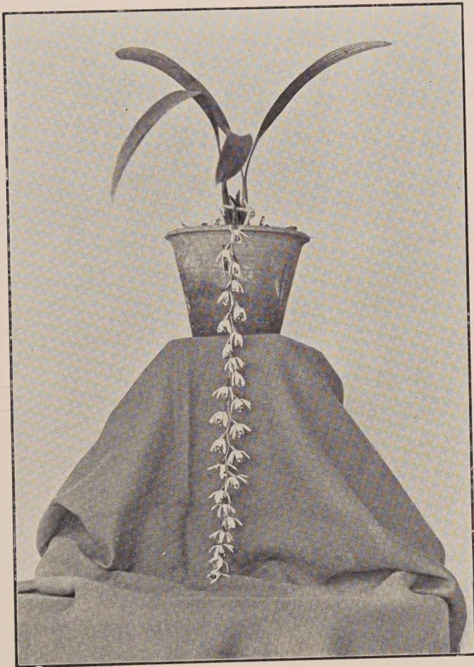

October 1930
THE greatest factor making for the possibility of the cultivator of the soil producing more than the mere sufficiency to keep himself and his family and so advancing to a greater or less extent to the position of a business farmer is the presence of easily accessible markets. Here he passes on the crops from his fields either directly to those who want them for their own consumption or to merchants to distribute them, and he receives in exchange something with which to purchase some of the other amenities of life.
If for any reason the cultivator cannot thus pass on that which his lands have been made to yield he cannot advance beyond that of an individualist or at most a unit in a family or village community. It is the thought of this individualistic existence, and often a bare one at that, which makes so much of the discontent with rural life amongst the youth of the country side and drives them to the town. Unfortunately bare existence is the lot of so many of the cultivator class. Their paddy lands rarely produce enough to keep them for more than a few months and if they possess dry lands the crops from them are too often not more than sufficient for the remaining months. Should they be, however, they are not easy of sale. Ideally, in many countries, types of agriculture centralise around the towns according to the distance from the town. Nearby we have the market garden cultivation giving vegetables and fruits best quickly put upon the market by animal transportation, whilst further away we get food grains and non-perishable material carried by rail and river. Whilst we are but a small Island busy markets are few and this
190fact is a limiting factor in the disposal of much of the cultivator's produce. A problem for the solution of which the Agricultural Department must seriously search is this means of marketing produce when cultivation has yielded it. On the experimental areas under the Department the greatest difficulty is often experienced in selling the crops and thus one can imagine how important a factor is similar disposal in the case of those humbler people, to help whom the Department exists. Indeed this difficulty itself must often prevent the cultivator from practising more intensive methods. Small quantities of such produce as gingelly, chillies, groundnut, pineapples, and vegetables raised on the experimental areas have during the past year been extremely difficult to dispose of at anything like their proper market value. As an experiment in the Southern Province the Divisional Agricultural Officer is collecting the vegetables and fruits from the surrounding stations for disposal in Galle. At first the venture is being made of a weekly sale at the Divisional Office, but later if this proves successful the experiment of a permanent stall on the local market may be tried. Surrounding the Chilli Experiment Station at Weraketiya in the same Province, it will be tried, with the help of the Co-operative Department, to organise a scheme of co-operative collection and sale of dried chillies by those who grow them. An impediment to the extension of this crop is the difficulty in selling the produce whilst imported chillies are to be seen everywhere. It is hoped that eventually out of these small beginnings at collective marketing many more and successful schemes may be developed. Co-operative marketing is without doubt a solution to many of our cultivator's difficulties.
191F. P. JEPSON, M.A.,
ASSISTANT ENTOMOLOGIST,
DEPARTMENT OF AGRICULTURE, CEYLON
THE termites which are of importance in connection with the cultivation of tea in Ceylon are, with few exceptions, species which nest above the ground, and they belong to the genus Calotermes. There are three local species which attack tea, Calotermes militaris, Calotermes dilatatus and Calotermes greeni.
Calotermes militaris is mostly active at higher altitudes and is a serious pest in the Maskeliya and Dimbula districts, although it occurs, also, in other districts and we have three records of tea being attacked in the Ratnapura district by this species. Bushes attacked by Calotermes militaris are completely hollowed out, often only a shell of bark and cambium remaining.
Calotermes dilatatus is mainly a low-country species although we have found it as high as the Kandy district. It is probably the species which most planters are familiar with. It does not excavate the large central cavities characteristic of Calotermes militaris, but forms an extensive system of galleries in the branches and upper portions of the bush, only descending to soil level in advanced cases of attack.
Calotermes greeni occurs from sea level to about 4,000 feet. It forms galleries somewhat similar to Calotermes dilatatus, only that they are larger and more extensive. It is probably the most widely distributed of the Ceylon Calotermes but fortunately it is the least common species found in tea bushes. A very favoured host plant is Grevillea, and trees killed by this species are commonly met with in most parts of the Island where they are grown. It is possible that the previously unexplained mortality of Grevilleas over large areas in certain districts has been due to the agency of this species. The appearance of attacked trees is very characteristic, the tops dying back. The termites gain entry, in the winged stage, only through the dead snags of branches which have been carelessly lopped.
A new species of Calotermes has been found in the Maskeliya and Pundaluoya districts, but so far only in tree stumps and toona, but there is no reason why it should not also attack tea.
192One is often asked where these pests of tea have come from. The species represented here are all peculiar to Ceylon, although, of course, other species of Calotermes occur in other countries. Originally our species inhabited jungle trees. We have a very extensive list of host plants of the different species which includes many jungle trees. Large areas of a woody plant like tea furnished with ample points of entry for the winged stages in the form of dieback branches and dead wood provide, on a large scale, eminently suitable breeding grounds for these insects which are undoubtedly on the increase and, in my opinion, constitute a very serious menace to the Ceylon tea industry in the future. Most other pests of tea cause some loss of crop which is often slight and may be merely seasonal. Calotermes kills the bushes which it infests and, consequently, these pests are responsible for considerable capital depreciation of estate properties.
Unfortunately we still have a good deal to learn regarding the habits of tea termites, and it is essential that their habits should be completely understood before we can hope to arrive at a satisfactory form of control. The period occupied during the life-cycle from egg to winged adult is not known. We have been breeding them in captivity for the past three years but well-grown larvae obtained from eggs two and a half years ago still show no indication of transforming to the winged reproductive state. There are several different castes or stages of the same insects in a Calotermes colony. In addition to the original founders of the nest, the so-called royal couple, there are eggs, larvae, nymphs in various stages of development, soldiers and wingless reproductive adults. As a rule the latter are only produced when the Colony has been orphaned by the death of either the king or queen or both. We have produced this stage from eggs in captivity in nine months in the case of Calotermes militaris and also Calotermes dilatatus. The function of the soldiers is supposed to be concerned, chiefly, with the defence of the colony against invaders. They are an important aid to the identity of the species, the arrangement of the teeth of the mandibles being a valuable specific character. Calotermes colonies are normally established by a winged pair which enter woody plants to which they are attracted through a wound or snag. They excavate a small cell, seal over the entrance, shed their wings and become the founders of a new community. The number of individuals in a colony may be anything up to 5,000 or more. We believe that the winged reproductive stage is only produced when required and that the transformation to this state is only proceeded with when overcrowding or shortage of food renders this step necessary. It is when a flight takes place that the insects pair off, enter plants and found new colonies.
193Turning to the matter of control, this presents three distinct problems, firstly the prevention of initial attack, secondly the destruction of the colonies in plants which have become infested and thirdly, the prevention of re-attack of bushes which have been relieved of their invading colonies by treatment. Of these problems, the most important is, obviously, the prevention of attack in the first place. It has already been mentioned that entry to woody plant is effected by means of the winged stages through decayed wood in the form of snags, etc. In the absence of such weak spots the insects are incapable of penetrating to the heartwood of the plants to which they are attracted. Unfortunately the periodical pruning of tea bushes leads to the dying back of a certain number of the pruned branches and the decay of these branches extends into the sound wood resulting in the condition usually known as "branch canker" or "wood-rot." This condition is extremely prevalent in Ceylon and is responsible for the loss of a considerable amount of frame on the majority of tea estates. There are many views as to the cause of diebacks such as lack of food reserves in the root system, method and season of pruning, and so on, but it is certain that there is still much to be learnt on this important subject. Personally, I consider this matter is more in need of immediate investigation than any other problem connected with the tea industry in Ceylon at the present time. I feel confident that if diebacks after pruning can be prevented the problem of Calotermes control will be automatically solved. Until we know the cause of diebacks after pruning and until their occurrence can be avoided we are unable to prevent termites from gaining admittance to the bushes, and have to resort to a method of destroying the insects after they have gained entry.
The destruction of large colonies of termites in tea bushes has presented many difficulties. As even a few survivors are able to refound a colony, nothing less than a 100% mortality could be aimed at. It was necessary, therefore, that the treatment should kill every inhabitant of the termite colony without injuring the bushes or affecting the quality of the leaves required for plucking. We have tried everything we could think of which might have the desired effect but without fulfilling all the necessary requirements. When on leave in 1928 I visited America to consult Dr. Snyder, one of the most prominent termite authorities in the world, regarding our problems here and he advocated trying Paris Green. Now, we had already tried Paris Green against Calotermes militaris in 1926 with marked success but we had abandoned it owing to a report that the treatment had led to arsenic being deposited in the leaves of treated bushes. Dr. Snyder suggested that we should renew the trials having careful analysis made of the leaves for some months following
194treatment. These trials have now been in progress for over a year and periodical analysis of the leaves of treated bushes have been made by the Government Analyst for a period of twelve months. In no case has any trace of arsenic been found nor has the treatment resulted in any injury to the bushes. Furthermore a 100% mortality can be assured within about three months if the Paris Green penetrates to any portion of the occupied termite workings. The treatment can, therefore, be claimed to be a complete success against Calotermes militaris at all events. Many acres have now been treated in this manner in the Maskeliya and Dimbula districts and very encouraging reports of the treatment have been received.
Now, it must be admitted that Calotermes militaris lends itself to this method of control more readily than Calotermes dilatatus as there is no difficulty in penetrating the active workings of the former insect as they are to be met with about soil level in the main stem. The method of application is to bore a hole into the stem with a gimlet and blow in about one-twelfth of an ounce of Paris Green powder by means of an enema syringe of ball pattern. The perforation should then be plugged with cement, asphalt or other efficient seal. In the case of Calotermes dilatatus it is often extremely difficult to locate the site of the galleries. If they can be found, and the Paris Green introduced, the results should be as effective as they are in the case of Calotermes militaris. The fact that bushes are attacked by Calotermes is often evident to the pruners who, after all, have a better opportunity of discovering infested bushes than anyone else. I suggest that as a means of marking such bushes the pruners be instructed to leave, unpruned, one prominent branch on each bush they find to be attacked. In this way such bushes will be evident to the trained coolies who follow the pruners to treat infested bushes with Paris Green. After treatment the indicator branch can be removed.
Inquiries have been made in America as to the possibility of designing a microphone for locating bushes which are infested by Calotermes similar to those used for detecting other boring insects but, although a delicate apparatus for laboratory use might be possible, there seems little chance of obtaining an instrument suitable for work in the field.
The expenditure incurred in destroying large colonies of termites within the bushes which they infest is only partly justified if the treated bushes are liable to become re-infested almost immediately after treatment. The cleaning-up of bushes and the removal of dead and diseased wood are essential if Calotermes attack is to be prevented, particularly that of Calotermes dilatatus and Calotermes greeni. The problem of preventing the
195re-invasion of treated bushes is really identical with that of preventing initial attack. The maxim: "prevention is better than cure" is certainly one which should be borne in mind where these pests are concerned. It is obviously preferable to deprive the winged termites of their means of gaining entry to the bushes than to destroy them after they have entered and then attempt to prevent the establishment of new colonies in the same bushes at a later date. In my opinion the true form of control of the tea Calotermes is preventive rather than curative. Prevention of attack can only be secured by depriving these insects of the decayed wood which is essential for the commencement of their attack and, again, I consider this end is best secured by the prevention of diebacks after pruning. In short, I believe that the prevention of Calotermes attack of tea really resolves itself into the prevention of diebacks.
Any method of destroying these pests in bushes which have become infested is, however, a valuable subsidiary control measure and the Paris Green treatment is the cheapest and most effective method we know of at the present time. The destruction of millions of potential winged reproductive Calotermes adults per acre will certainly tend to reduce the risk of invasion of unattacked bushes or those which have been relieved of their infestation by treatment. In this way the spread of the pests on estates will be curtailed as it will, also, from estate to estate and from district to district.
196K. J. ALEX. SYLVA, F.R.H.S.,
ACTING CURATOR,
HAKGALA BOTANIC GARDENS
Coelogyne Dayana, Reichb. belongs to a noble race of pseudo-bulbous epiphytic orchids comprising over fifty named species distributed in the tropical and sub-tropical regions of Asia. The genus occurs at various altitudes in India, Borneo, Malaya and China. Most of the species are beautiful and therefore favourites in cultivation.
The genus is divided into two sections, viz., the true Coelogynes, most of which have beautiful, thick, and large foliage, with drooping racemes, and the Pleiones which have the peculiar habit of throwing out flowers from the soil even before the appearance of any leaves. Coelogyne Dayana is indigenous to the high forests of Borneo where it is found growing on tree trunks and rocks. It was introduced into Ceylon about 1890.
It has handsome long plicate leaves produced from the apex of the long ovoid pseudo-bulbs. It is also very conspicuous for its large brownish coloured flowers borne alternately on a long drooping raceme two to three feet long. The flowers last for nearly 20 to 25 days.
For successful cultivation of the members of this genus a certain amount of light and warmth is required. A good rooting medium for large leaved Coelogynes of the type of C. Dayana may be made up of equal parts of decayed wood, old coconut husk, small bits of bones and charcoal and a good quantity of half-decayed leaves or Sphagnum moss. The latter should be chopped finely before being mixed up with the compost. Coelogyne as a rule has a tendency to grow and lead on in one direction till it reaches the rim of the receptacle, indicating that it needs repotting or rebasketing. The plant, however, does not tolerate much disturbance and it should not be too frequently tampered with. Repotting, therefore, should be avoided unless the compost is old and sour or the plant is overgrown.

A black and white photograph of a potted plant, Coelogyne Dayana. The plant has several long, dark, arching leaves that curve upwards and outwards. A long, slender inflorescence hangs down from the center of the plant, covered in numerous small, light-colored, bell-shaped flowers. The plant is housed in a dark, tapered pot, which is placed on a dark, draped cloth. The background is a light, textured surface.Coelogyne Dayana, Reichb.
197Coelogynes may be grown to best advantage in shallow perforated pans or teak baskets suspended from the roof of the green house or verandah in the warmest position. Sections of the Tree Fern (Alsophila or Hemitelia) cut up into lengths of 6 to 12 inches have been found handy for its cultivation. The thick base sections of the fern trunk can be used after scooping out the soft and pithy substance and filling them with the above compost in a fine state. The plants need top-dressing as soon as the flowers are over. All Coelogynes will welcome an ample supply of water during the growing season and watering should be continued till the plants come into bloom, and then the supply should be reduced. The syringe may be used freely during the dry weather to keep the foliage fresh and to prevent any undue shrivelling of the pseudo-bulbs. Propagation is affected by carefully dividing the pseudo-bulbs with a growing lead to each division. Old and leafless pseudo-bulbs rarely produce new plants unless they are severed with a sound and healthy root-stock.
198DUNCAN J. DE SOYZA, DIP. AGRIC. (POONA)
DEPARTMENT OF AGRICULTURE, CEYLON
THE question of weeds and their control is one of the most pressing problems that confront the cultivator. A "weed" may be described as any plant that does not form part of the existing crop. Most frequently weeds are useless plants, but useful and economic plants may also become pests when they persist in making their appearance in places where they are not wanted. In this way brinjal plants among turnips are as much weeds, as love-grass among tomatoes or wild sunflower among dhalias.
The effects of weeds on crop production are quite familiar even to the ordinary farmer; comparative statistical study on crop production has shown that the drain on the soil by allowing weeds to grow rank for a year on a plot of land is equal to several years' cropping of the same land without the addition of any manure. The objections to the presence of weeds amongst cultivated crops are so obvious that it is scarcely necessary to allude to them. Most of these objections may be summed up in the single word "Competition." Weeds compete with crops both above and below ground; above ground they act as a mechanical hindrance, in shutting off the life-giving light, while below ground their roots rob the soil of the water and the soluble food constituents which otherwise would have wholly been used up by the standing crop; their root secretions produce toxicity in soils; they tend to harbour insects and parasitic fungi and during the absence of the cultivated crop, they act as veritable breeding grounds for these pests. Often some of these weeds that are poisonous in character, prove fatal to farm animals in being unconsciously mixed up with fodder; some may have poisonous yams, which may easily get mixed up with the standing tuberous crops; a typical example of such a detestable weed, very common in the Labuduwa area is the well-known "Devil-in-the-bush," Gloriosa superba, S. Niyangala, which yields extremely poisonous tubers that may freely enter the harvest of sweet-potatoes so commonly grown in this area. Weed seeds by mixing with the harvest have a profound action by lowering the standard of the crop and hence its market value. There are other more or less minor disadvantages peculiar to special kinds of weeds; climbing weeds as Mikania scandens, S. Loka-palu, commonly called the "World's ruin" may overrun a crop and consequently bear it to the ground; some weeds as Ficus parasitica, S. Gas-netul, may strangle other plants by the tightness of its coils, while others as
199Loranthus longiflorus, S. Pilila, that parasitise upon other plants sap the host to such an extent, as to kill it or lower its vitality so much as to prevent it from bearing fruit.
Many of the worst weeds of any district will be found to have been introduced into it from some other district or country. In spite of the fact that Nature has provided many excellent devices for seed dispersal and dissemination of other reproductive parts of plants, it has been noticed that most of the undesirable weeds have been introduced by human agency, either accidentally in being mixed up with seeds of economic crops, or, in many cases deliberately, owing to some attractive feature of the plant having been recognised by a plant lover but not its harmful nature, which would be noticed only too late. It is in this way that Eichornia crassipes, S. Japan-jabara, commonly known as "Water hyacinth" or "Lilac Devil," was introduced into Ceylon from South America in 1905 as an ornamental plant. This is a floating water-weed that multiplies very rapidly by vegetative means, blocking channels and tanks within a very short period; the damage done by this weed is so great that it is now prohibited by legislation. Examples of other foreign weeds found in Ceylon are:—Eryngium foetidum, commonly known as the "Fit-weed," and Mikania scandens, both natives of tropical America; Mimosa pudica, S. Nidi-kumba, the well-known "Touch-me-not" plant and Sonchus arvensis, the "Sow-thistle," both natives of Brazil; Synedrella nodiflora from Mexico; Tridax procumbens known to planters as the "Kurunegala Daisy" from South America; Lantana aculeata, S. Gandapana, introduced as an ornamental plant soon after 1824, and Tithonia diversifolia, the "Wild sunflower" so conspicuous in the Kandy district, which was brought over as a garden plant as recently as 1851 and probably escaped from cultivation at the Royal Botanic Gardens, Peradeniya.
It is very regrettable sometimes to see well-informed agriculturists of this country throwing away packing material as grass or ferns, in which they receive instalments of plants or cuttings, and thereby consciously or unconsciously aiding the introduction and distribution of these weeds.
The many devices for seed dispersal found in weeds are greatly responsible for their ubiquitous nature; some weeds as those of Vernonia cinerea, S. Monara-kudimbiya, Emilia javamica, S. Kadupara, Ageratum conyzoides, S. Hulantala, Erigeron sumatrense, the "Alavanga weed," Dregea volubilis, S. Kiri-anguna, and Calotropis gigantea, S. Wara, possess a silky pappus with the aid of which they are blown over considerable distances by the wind; seeds of Bidens chinensis, S. Wal-tekola, Cymbopogon aciculatus, S. Tuttiri, Urena lobata, S. Patta-epala, and
200Urena sinuata, S. Hin-epala, adhere to passing objects and in this fashion they are carried about and dropped; the seeds of the last two plants, remain enclosed in the mericarps which break off and fix themselves to any object that happens to brush against them. Wikstroemia indica, Loranthus longiflorus, S. Pilila, and Clerodendron infortunatum, S. Pinna, produce berries which are carried away by birds that drop the seeds after eating the sweet pulp surrounding them, while seeds of Oxalis corniculata, S. Hin-embul-embiliya, are scattered about by the explosive mechanisms of their fruits. Weeds like Hydrocotyle javamica, S. Mahagotukola, and Centella asiatica, S. Hin-gotukola, spread by means of runners or stolons; a great many weeds propagate themselves by the production of prolific underground modifications as corms in Typhonium Roxburghii, S. Polon-ala, T. trilobatum, S. Panu-ala, Colocasia antiquorum, S. Gahala, and Amorphophallus campanulatus, S. Kidarai; tubers in Cyperus rotundus, S. Kalanduru and Gloriosa superba, S. Niyangala; rhizomes in Cucurma zedoaria, S. Haran-kaha, and Zingiber zerumbet, S. Wal-inguru; suckers in Panicum repens, S. Etora and bulbs in Pancratium zeylanicum, S. Wal-lunu. Most of these plants that propagate by underground modifications are unconsciously disseminated by ploughs and other agricultural implements when at work, the small fractions of these subterranean parts that are broken off by these implements adhere to them and are carried and spread about on the land, where they grow out into new individuals that will later produce big colonies within a very short period.
When we consider the multifarious evil effects of weeds on the land and crop production, their control is one of the foremost problems that beset a farmer. Before we take up the laborious task of "Weed control," we should first of all make a study of their life histories; then, and then only, shall we know their weakest point for attack. Primarily we should find out their methods of infection: whether they seek their way into cultivated areas along with manures and irrigation water or through any other agencies as cargo and agricultural implements; whether by various devices of seed dispersal or by elaborate underground methods of dissemination.
According to the duration of life, weeds may be short-lived or long-lived: the former are classed as annuals and biennials, the latter as perennials. Many of the weeds of the worst class are perennials and they have other methods of reproduction besides that of seeding, namely vegetative propagation. In all these plants the various forms of modified underground stems remain hidden in the soil, while only the green aerial shoots are sent up above the surface of the ground, and in the process of weeding, only the aerial parts are scraped off, leaving the underground
201portions intact, which readily sprout out again. Such weeds with the aid of their special contrivances escape the eye, even of the most vigilant farmer and in this way persist in the struggle for their existence, unyielding to the cultivators' destructive methods, most of which prove futile. Some annuals as Mollugo pentaphylla, S. Wal-patpadagam, Euphorbia thymifolia, S. Bindada-kiriya, Phyllanthus Niruri, and P. urinaria, S. Pita-wakka, flower and seed when quite young, so that by the time the farmer starts eradicating them they have already dropped seed for the next generation.
Another characteristic which helps in the persistency of weeds is their readiness for adaptation with the changing climate and edaphic conditions; this alone is a great asset by virtue of which they struggle on when all the more susceptible crops have succumbed to the unfavourable changes in the environment: examples of these are met with among the many grasses as Echinocloa colona, Eragrostis pilosa, and Eleusine indica. A very noticeable feature that supports the continuous presence of weeds is the rhythmical succession of species that appear from season to season: this forms a very illustrative study to an observant student, interested in the ecology of plants. Examples typical of this behaviour were noticed in the Peradeniya Farm School plots, where the more conservative and widely distributed Mollugo pentaphylla and Typhonium Roxburghii were superseded by the more plastic Euphorbia hirta, S. Budada-kiriya and Portulaca oleracea, S. Hin-gendakola. Another illustration of the succession of species is seen in the paddy fields, when after harvest as the fields run dry all the aquatics as Eriocaulon cinereum, S. Kudu-matta, E. quinquiangulare, S. Hin-kokmotta, E. sexangulare, S. Kokmotta, and Xyris Pauciflora, disappear and are replaced by dry land plants as Ageratum conyzoides, Cymbopogon aciculatus, Synedrella nodiflora, etc., all of which descend from the bunds and the surrounding areas into the fields. During this stretch of dry unfavourable conditions, the water-loving species perennate in the soil by means of viable and hard-coated seeds. Weeds like Potulaca oleracea, Torenia asiatica, S. Kotala-wel, and Alternanthera sessilis, S. Mukunu-wenna that possess creeping stems, rooting at the nodes, persist by the growth of small parts of stems left behind during the process of weeding.
Whenever a new-clearing is started, weeds of the surrounding country soon begin to appear upon it and if unchecked may by degrees take complete possession of the cleared land, until it becomes impossible to grow any crop without the expenditure of a vast sum of money in clearing the newly-established weeds. It is unprofitable to clear more land than can be thrown into immediate cultivation; cleared jungle land after "burn-off" is
202practically free of seeds of weeds, and only just a few arrivals from outside will be found scattered about. These first colonists should be destroyed before their own seeds ripen; but once these first emigrants are permitted to set seeds themselves, their progeny springs up in ever-increasing ratios until the whole new-clearing is occupied by them.
The first principle in destroying weeds is therefore to attack them before they have time to ripen seed. Extermination of weeds would have been easier, if the seeds which fall at a given time all germinated at once, but unfortunately for the farmer all seeds do not sprout out at the same time; many remain dormant for varying periods so that they germinate at irregular intervals, producing a succession of weeds which in turn mature their fruits and drop their seeds at varying intervals; owing to this fact constant weeding at shorter intervals is necessary at the start in order to put down the numbers.
Tillage operations will, to a certain extent, lead to the immediate germination of a large proportion of seeds which should be followed by systematic repeated weeding. Very often, in a new-clearing, seeds that have dropped from large shrubs, trees, and giant lianes, that once formed the wild flora of that jungle area, begin to germinate and produce a progeny that could be well reckoned as weeds; stumps of trees when not properly grubbed and removed may also sprout out and occur as weeds. Many weeds of this class occur in the Labuduwa Experiment Station and as examples may be quoted:—Calophyllum Inophyllum, S. Domba, a large tree; Ochlandra stridula, S. Bata-li and Teinostachyum attenuatum, both shrubby bamboos; Entada scandens, S. Pus-wel, a giant climber; Salacia reticulata, S. Himbutu-wel, a woody twiner; Ficus asperrima, S. Sevana-mediya, known as the "Furniture-leaf-tree"; Dillenia retusa, S. Godapora, an undersized tree; Tabernamontana dichotoma, S. Divi-kaduru, the well-known "Eve's Apple" or "Forbidden Fruit" tree; Cerbera Odollam, S. Gon-kaduru, a moderately-sized tree; Eugenia corymbosa, S. Dan, a woody shrub; Heptapleurum stellatum, S. Itta-wel, a large climbing shrub; Smilax prolifera, S. Mahakabarassa, a woody climber; and Ficus parasitica, S. Gas-netul, a large tree, at first parasitic on other plants, later leading a terrestrial life, surrounding the host on which it supports itself and kills it by the tightness of its coils.
Perennials like Nut-grass or Couch grass that propagate by underground methods, should be dug out and the subterranean parts removed, but any attempt to remove such pernicious weeds as these, if not carried out with the utmost care, may merely lead to an increase of the nuisance. Weeds of a perennial nature could be kept in check by continual mowing down and removal of
203the green aerial parts, as this will tend to weaken them materially; repeated pulling up of these shoots as fast as they appear results in the exhaustion of the stored food and effectually prevents the elaboration of more, since it is in the leaves that the plants manufacture their food.
Land infected with pestilential weeds, which is not immediately required for cropping can very often be eradicated by introducing another plant which is able successfully to compete with these. Such a successful competitor is seen in Mikania scandens, S. Loka-palu, fittingly called the "Mile-a-minute" or "World's ruin"; this is a twining creeper which grows with extraordinary rapidity, weighing down and smothering any plant that happens to be on its way. The nature of its growth and the extent of damage done by weighing down other plants can be easily observed round about Kadugannawa, where this is found growing unchecked, pulling down jungle shrubs and smothering young coconut plants. This shows that it is a noxious weed itself, but in this connection as it is employed for a useful purpose it ceases to be a weed for the time being. Several other climbing or straggling plants can be used in a similar manner, their only necessary qualification being, that they should themselves be easy to eradicate, when they have come out successfully in the struggle. Much discretion should be used in setting one weed to destroy another as it so happens, that the remedy may be worse than the disease.
Very often we are asked to lay down the simplest and cheapest method for weed extermination. This is far from possible, as there is no royal road to the extermination of weeds. Scraping off the weeds with a mamoty is cheaper and less laborious than hand weeding, but this method of attack is not applicable everywhere and with all kinds of weeds. Weeds with underground modifications will not be affected by this method; hence the procedure that should be adopted for weed eradication varies with the nature of the plant.
There are some who advocate the use of poison sprays as Sodium arsenite, but this seems to be effective only with certain kinds of weeds, while the others are left intact. Commercial weed-killers can now be had both in liquid or powder form, most of the very effective ones containing compounds of Arsenic, Sulphuric or Carbolic acids; substances as common salt, crude oil, kerosene, or copper sulphate can also be used with effect and at less cost. In Queensland, Arsenic trichloride is used with great success against Cactus, the substance being applied in a gaseous form.
On level ground a great many weeds can be kept under control by the use of good cultivating machines. The regular use of a disc-harrow stirs up the soil to a good depth and at the
204same time removes weeds very effectively. This implement could be used with very beneficial results in coconut estates, after the first ploughing is done, as is well demonstrated in some of the Government Experiment Stations. The use of a good plough that turns the soil right over, will not only uproot the weeds but will bury and stifle them, preventing them from seeing the light again. The indigenous plough is of no use in this respect, as it has no mould board and hence it only cuts furrows and does not turn over the slice of earth as is done by foreign ploughs. The various types of hoes now found in the market are also very effective in weed eradication and could be used between two rows or over a single row of plants, in the latter instance the scraping being done on either side of the row. This implement does the dual operation of weeding and mulching the soil and is used to great advantage in the cotton tracts throughout India. In economic crop production, the introduction of such improved machinery will not only save labour and time, but a high standard of efficiency in the work is obtained.
After all prevention is better than cure; owing to the presence of different climatic belts in Ceylon, ranging from dry arid zones, through moist warm districts to temperate regions among the hills, many foreign weeds when introduced become acclimatised with ease and as pointed out before, great precaution should be taken against the introduction of plants that would later turn out to be pests. In this country unfortunately only a couple of plants are prohibited by law.
In the control of weeds we should start by destroying the already existing ones and thence take the necessary precautions to prevent their further invasion. It is a good custom to bury the weeds after removal as they will add much organic matter to the soil and in fact will give back all the plant food nutrients taken up by them from the soil; but such weeds should be uprooted before seeding. Weeds can also be suppressed by a careful rotation of crops, as the different cultivation methods attack each kind of weed in turn. Above all the importance of using pure seed as a check to weed growth should not be forgotten; and care should be taken whilst collecting the harvest to avoid the inclusion of weed seeds. Further, it will be found that clearing up of neighbouring waste lands overgrown with weeds and burning or burying them is another useful method of attaining the object in view.
The procedure that should be adopted in weeding and the proper degree of weeding are often much disputed points. Whether continuous clean weeding should be practised is also another query put forward by many planters. Some advocate the practice of maintaining throughout a clean-weeded surface, but when we consider the greatest problem that is now before us,
205namely "Soil erosion," continuous clean weeding on sloping land should be done only with some degree of caution. Once jungle land is cleared of its natural covering of vegetation, the surface soil is directly exposed to the elements, especially rain water, and there begins a continual eroding action on the land. The loosened particles of soil move downward partly by gravity and partly by the force of water rushing to lower levels. Under these circumstances there is a continuous loss of soil from the higher regions. Wherever there are contour drains and silt-pits, a good amount of labour and time are expended in cleaning and throwing up the silted earth. Under natural conditions the rank growth of plants on the surface of the land and the accumulation of fallen leaves from the trees above, subdue the force of the precipitations and whatever water reaches the ground is to a great extent absorbed by the thick layer of leaves and humus, while the surplus water flows away over the thick carpet of dead leaves. In open cultivated land there is no such natural covering to prevent soil erosion, and monsoon after monsoon, year after year, the drain on the soil is enormous.
On the face of this great problem, the use of cover crops is recommended. Whenever possible these crops should belong to the Leguminous family of plants, as they have the unique power of absorbing and fixing in the soil the free Nitrogen of the atmosphere and converting it into Nitrates by the help of the Nitrogen-fixing micro-organisms harboured in their root nodules. Among weeds we meet with many such plants that grow close to the ground and bind the soil within the meshes of their roots against the eroding action of flowing water. Such weeds should rather be protected than destroyed, provided they are not in any way menacing to the cultivated crops; as examples of such useful weeds may be mentioned:—Desmodium triflorum, S. Hin-undupiyali, D. heterophyllum, S. Maha-undupiyali, and Alysicarpus vaginalis, S. Aswenna; another such weed that should be spared is Ipomaea cymosa, S. Maha-madu, which is not a leguminous plant but could be used to great advantage as a soil binder on the border of terraces.
To all appearances the presence of ferns, liverworts and mosses in the bottom and sides of drains check soil erosion to a great extent. The positive advantage of allowing ferns and mosses as Gymnogramme calomelanos, Sellaginella intergerrima, Lygodium scandens, Gleichenia linearis, Dryopteris gongylodes and several species of Nephrolepis to grow rank in the drains is quite noticeable in the Central Agricultural Station, Labuduwa, where the soil is sandy in the lower regions and where there is a steady excavation of the land along the drains where no ferns or mosses are found. A glance at these facts clearly points out, that when we come to the question of clean weeding we should use much discretion.
206T. E. H. O'BRIEN, M.SC., A.I.C.,
CHEMIST,
RUBBER RESEARCH SCHEME, CEYLON
SAMPLES of smoked sheet and blanket crepe were provided recently by a large number of Ceylon estates for the purpose of an investigation of variability of plasticity. This investigation is being carried out by the London Branch of the Research Scheme at the Imperial Institute, but before being despatched to London the samples were carefully examined from the point of view of appearance, and it is considered to be of interest to record the conclusions which were reached with regard to the general standard of appearance of the rubber. For the information of the superintendents who kindly provided the samples it should be stated that it will be a considerable time before the results of the plasticity tests are available. Variations in plasticity develop during storage and the samples will therefore be stored at the Imperial Institute for 6 months before the tests are started. There will then be a further period of at least six months before the investigation is completed.
A total of 204 samples was received, but a small number arrived too late to be included in the present classification which refers to 195 samples.
General Attractiveness.—The samples were divided into 3 grades representing the general attractiveness of the rubber, without taking into consideration the presence of specific defects which are mentioned later; the result of the classification being as follows:
| Good | 140 samples | 72 % |
| Medium | 48 samples | 24.5% |
| Bad | 7 samples | 3.5% |
It was considered that sheets classified as "good" would secure a ready sale at full market price and in some cases at a small premium. The "medium" sheets would find a less ready market, which is a matter of importance when an excess of the commodity is available and this, in some cases, would lead to disposal at a slight discount. The "bad" sheets were distinctly below the market standard of appearance.
207These samples can be regarded as fairly representative of Ceylon estate smoked sheet and it is very satisfactory that the output from nearly 75% of the estates can be classed as attractive in appearance. The samples classed as "medium" would also in most cases have been in the higher class if a little more care had been taken in manufacture, and this could be done without any material increase in cost of production. Some of the common reasons for rejection of samples were:—uneven smoking, dark reaper marks, light reaper marks, uneven shape, grit and other foreign matter in the rubber, uneven and pitted surface. It is true that (with the exception of grit) these defects have no relation to the quality of the sheets, but the fact remains that rubber is sold on appearance, and when supplies are plentiful it is only natural that the buyer will give preference to the rubber which appears to have been most carefully prepared.
Bubbles.—The number of sheets affected with bubbles was as follows:
| Slight | 26 | 13.5% |
| Medium or bad | 7 | 3.5% |
In most cases of "slight" bubbles the defect was due to fermentation at the edges of the sheet, and could be avoided by more careful washing of the pans and troughs, or if necessary by the use of disinfectants.
"Rust" and Mould.—Eight of the sheets were affected with rust and in only three cases was it severe. Some years ago rust was one of the most common defects of Ceylon smoked sheet, but ceased to be a source of trouble when its cause was understood and suitable precautions were taken to prevent its development.
The samples were not tested for resistance to mould, and only a few samples which were stored at the laboratory during wet weather developed the defect. Immunity from trouble with mould can be secured by means of paranitrophenol at a cost not exceeding 0.175 cents per pound of rubber, and the use of this chemical can be regarded as an economy on any estate where conditions of preparation, transport or storage lead to trouble with this defect.
Stickiness.—Smoked sheet is not often penalised on account of surface stickiness, but it is of interest to record that the samples which were examined showed very material differences in this respect. From experiments which are at present being carried out by the Research Scheme it appears that the occurrence of surface stickiness in smoked sheet depends on the balance between smoke and heat in the drying house. Sheet dried at raised temperature without smoke is distinctly sticky and the higher the temperature of drying, the greater the density of
208smoke required to prevent the development of stickiness. There is also another type of stickiness due to the sheets "sweating" which arises from lack of ventilation in the smokehouse.
The degree of stickiness was judged by the feel of the sheets and the result of the classification was as follows:
| A | Non-sticky | 103 | 53 | % |
| B | Slightly sticky | 66 | 34 | % |
| C | Medium ,, | 16 | 8 | % |
| D | Very ,, | 9 | 4.5 | % |
| E | Almost tacky | 1 | 0.5 | % |
Class A and B can be regarded as normal and satisfactory. Class C and D would be likely to cause comment by the brokers. The sheet in Class E was distinctly below the standard of first grade rubber.
Size, thickness, colour and marking.—It is only to be expected that the samples would vary materially in these factors, which are governed largely by the equipment available, such as type of machinery and pans, smokehouse dimensions, etc.
Size.—The size of the sheet is not unimportant in relation to economy of packing space, the ideal being that the sheet should just fit the packing chest, i.e., should be approximately 23 ins. 18 ins. A sheet of this size weighing lb. is very suitable in thickness for efficient drying. In many cases wide sheets cannot be prepared owing to unsuitable reaper spacing or the use of narrow rollers, but care should be taken that the sheets are of the correct length. Packing is then fairly economical if the extra width of the chest is occupied by sheets packed on edge. Sheets which are longer than the chest are particularly uneconomical, as they must either be trimmed, with loss of first grade rubber, or doubled over which interferes with packing.
The sample sheets were classified according to length, with the following results:
| Less than 21 inches | 77 | 39.5% |
| 21-24 inches | 91 | 46.5% |
| More than 24 inches. | 27 | 14.0% |
The saving which can be effected by economical packing may vary from 0.1-0.2 cents per lb. for rubber sold locally, to 0.5 cents or more if the rubber is sold in distant markets.
Thickness.—Thin sheets dry rapidly but it may not be economical from the point of view of hanging space and handling to make them very thin. Also a thin sheet gives an impression of weakness, and requires heavier smoking to give the same colour as a thicker sheet more lightly smoked. On the other hand the time of drying increases disproportionately if the sheet is too thick.
209The thickness of the sheets was calculated from the dimensions and weight of the samples in terms of weight (in grams) per square foot. The figure varies slightly according to the pattern of the marking roller but gives a fairly satisfactory index of thickness. It is considered from recent experiments that a thickness of 225-250 grs. (8-9 ounces) per square foot is a suitable average for rapid drying and good appearance.
The thickness of the samples examined is summarized as follows:
| Thinest sheet | 173 | grams per square foot. |
| Thickest sheet | 372 | grams per square foot. |
| Thin sheets (less than 225 grs. per sq. ft.) | 19 | 10% |
| Medium sheets (225-300 grs. per sq. ft.) | 131 | 70% |
| Thick sheets (more than 300 grs. per sq. ft.) | 38 | 20% |
(A few sheets were not measured owing to unusual pattern of the marking roller).
Colour.—The colour required in smoked sheet depends largely on the taste of the buyer, and a sample which is considered too dark by one broker may well be rejected as too light by another who is buying for a different market. Generally speaking, a well smoked sheet is to be preferred as being more resistant to mould.
The sample sheets were roughly classified according to colour, but the classification is influenced by the prevailing "fashion" in colour. Sheets classed as medium colour would probably have been regarded as too light a few years ago.
| Light | 22 | 11.5% |
| Medium | 105 | 53.5% |
| Dark | 60 | 31.0% |
| Very dark | 8 | 4.0% |
Pattern of marking roller.—Generally speaking, the small pattern produced by a spiral roller with close grooves is most pleasing in appearance and most useful in hiding roughness and other defects in the sheet, but from a number of the samples it was evident that sheet with wide marking can also be very attractive if the marking is distinct and the rubber clear and smooth.
The primary object of marking the sheets with a pattern is to increase the rate of drying by exposing a greater surface area to the air. An average smoked sheet is approximately inch thick on the ridges and it follows that the most suitable type of marking from the point of view of efficient drying, is such that the sheet is divided into a series of ridges inch thick and inch wide, with narrow furrows between the ridges. The proviso
210should be made that if the furrows are too narrow and deep, water may lodge in them and give rise to "rust." A marking roller which is in use at the laboratories has grooves inch wide and deep with inch between the grooves and produces a sheet of attractive appearance and good drying properties. In the finished sheet there are 5 ridges per inch, the ridges being approximately inch wide, while the furrows are slightly less than inch wide.
The presence of a pattern on smoked sheet also reduces the tendency of the sheets to stick together when packed, sheets marked with narrow ridges having less tendency to stick than those with broad ridges. Sheet with large spaces between the ridges is uneconomical for packing, and this is a material point in comparing the amount packed per chest on different estates.
The pattern of the sample sheets was measured with the following results:
| Close marking (5-6 ridges per inch) | 101 | 67.5% |
| Medium marking (4-4 ridges per inch) | 18 | 12.0% |
| Wide marking (less than 4 ridges per inch) | 8 | 5.5% |
| Diamond marking | 23 | 15.0% |
(Total examined 150 sheets).
In general it may be concluded that about 75% of Ceylon estate smoked sheet, as represented by the 200 samples attains a high standard of appearance. A further 20% could probably be brought up to this standard by increased care in preparation. In the case of the remaining 5%, it is likely that reorganisation of methods of preparation, and improvement of equipment are required.
It is usually considered that the manufacture of good quality blanket crepe is easier than the preparation of good quality smoked sheet, and in conformity with this view it was found that the differences in the appearance of the samples of blanket crepe were less marked than were found in the samples of smoked sheet.
Colour.—The chief aim in preparation of blanket crepe is to secure a good colour, but it is not easy to compare the colour of various samples without making allowance for factors such as the thickness of the rubber and the age of the sample at the time of examination. It was also unfortunate that a proportion of the samples were supplied soon after the resting period when the colour of the rubber is abnormal; and several planters queried whether such samples could be regarded as suitable for the purpose of plasticity tests. Evidence is available regarding the changes in plasticity when new cuts are opened and a suitable adjustment can be made for such samples.
211There were indications that some of the samples had deteriorated in colour much more rapidly than others.
The colour of the 114 samples was roughly judged as follows:
| Pale | 10 | 9.5% |
| Medium | 66 | 63.0% |
| Off | 11 | 10.5% |
| New cuts | 18 | 17.0% |
The above classification does not include 9 samples which had been in store for several months and were noticeably off-colour. It is considered that the pale and medium samples were up to the market standard, and in fact in some cases the "medium" samples were more attractive in appearance than those classified as "light." The "off" samples would probably sell at a small discount. Five of the samples appeared to be machine dried and of these one was classified as "medium" and the other four as "off."
Five samples had a slight streakiness which is frequently a cause of trouble in marketing blanket crepe.
Hardness.—There were very material differences in the hardness of the samples. Generally speaking, the market prefers a hard gristly crepe, but it is probable that the average manufacturer's requirements would be better met by a comparatively soft crepe, especially if this is reflected in improved plasticity. Experiments carried out by the Research Scheme (R.R.S. Bulletin 49 p. 7) indicate that machine-dried crepe and crepe blanketed in hot rollers have improved plasticity.
The samples were classified as follows:
| Very soft | 2* | 2.0% |
| Soft | 21 | 18.5% |
| Medium | 54 | 47.5% |
| Hard | 26 | 22.5% |
| Very hard | 11 | 9.5% |
* machine dried.
Texture of Rubber and Size and Thickness of Pieces.—The type of rolling to which the samples had been subjected in the blanketing process differed materially. Rolling in a machine with even speed pinions, operated at a comparatively low speed, tends to produce a smooth, evenly marked product. On the other hand a machine with a large difference in speed between the two rolls, especially if operated at high speed, results in uneven marking which is less attractive in appearance.
The width of the samples naturally varied considerably. A number had been rolled in wide machines and were of the correct size to fit the packing chest, but of the others a proportion were
212not of a convenient width for packing. When the rubber is blanketed in a 15-inch machine it is preferable to fit hoppers to reduce the rolling width to -11 inches so that the sheets of rubber can be packed side by side in the chest. The proportion of samples which were of suitable width for economical packing was approximately 65%.
The thickness of the rubber also varied considerably. Generally speaking, the preparation of thick blanket saves time in rolling and is more economical for packing, but tends to make the rubber appear darker in colour. The thickness of the samples was calculated as weight (in grams) per square foot. Hitherto a thickness of 16 ounces (454 grams) per square foot has been regarded as an average for Ceylon blanket crepe, but judged by this series of samples the average is somewhat higher viz., 18 ounces per square foot. The result of the examination was as follows:—
| Less than 400 grams per sq. ft. | 24 | 21.0% |
| 400-600 grams per sq. ft. | 71 | 62.0% |
| More than 600 grams per sq. ft. | 17 | 15.0% |
| Lace crepe | 2 | 0.2% |
| Thinnest sample | 261 grams per sq. ft. | |
| Thickest sample | 914 grams per sq. ft. |
The conclusion reached from examination of the 114 samples of blanket crepe is similar to that for smoked sheet, viz., that a large proportion of the samples attain a high standard of appearance. It is difficult to give precise figures for the crepe samples as the appearance depends so largely on colour, which deteriorates during storage. It can however be estimated roughly that 85% of the samples were good, 10% indifferent, and in the remaining cases that re-organisation of manufacture is required.
In a number of samples the general appearance could have been improved considerably by greater care in blanketing.
213G. MARTIN, B.Sc., A.I.C., F.I.R.I.
AND
L. E. ELLIOTT, F.I.C., F.I.R.I.,
(OF THE SCIENTIFIC STAFF IN LONDON OF THE
RUBBER RESEARCH SCHEME, CEYLON)
DURING an investigation into the causes of variability in plasticity it was shown that the addition of sodium bisulphite to latex resulted in the production of a harder type of crepe than that obtained without bisulphite (Bulletin No. 49, p. 5). This is an observation which it is desirable to confirm, not because it may lead to the omission of bisulphite in crepe manufacture, but because it may be of value in determining the fundamental factors affecting the plasticity of rubber and so lead to better methods of control.
As the maximum amount of bisulphite used in the experiment did not exceed that recommended by the Rubber Growers' Association, it was decided in the confirmatory experiment to use still larger quantities with a view to determining the maximum effect of bisulphite on plasticity, although estates are unlikely to use large amounts owing to subsequent difficulty in dying the crepe.
Three samples were accordingly prepared, one containing no bisulphite, another the amount commonly used on estates and the third double that amount.
On arrival in London the samples were submitted to a hardness test at 100°C and in agreement with previous results the hardness of the samples was found to be proportional to the amount of bisulphite added to the latex.
As the plasticity of rubber may change considerably on keeping, portions of the samples were stored at 32°F and 60°F
214for six months and then tested for hardness and plasticity. The results of the tests are shown in the following table:
| Sample No. | Amount bisulphite added to latex | Before storage D30 | After storage for six months at | |||
|---|---|---|---|---|---|---|
| 32°F | 60°F | |||||
| D30 | Mastication Number | D30 | Mastication Number | |||
| mm./100 | mm./100 | mm./100 | ||||
| 1493 | nil | 147 | 157 | 88 | 158 | 87 |
| 1494 | normal (1:266) | 155 | 170 | 100 | 168 | 99 |
| 1495 | twice normal (1:133) | 174 | 169 | 105 | 169 | 103 |
These results confirm that the addition of bisulphite to latex renders the crepe more difficult to masticate. When the normal amount is used the mastication required is increased by nearly 15 per cent and when twice the normal amount is used the amount of mastication required is further increased by approximately 5 per cent. The temperature of storage has had little effect on the hardness or masticating properties of these samples.
It is not obvious why the addition of small quantities of bisulphite to latex should cause crepe to become hard. Information on this point may be of value in solving the general problem of the cause of variation in the plasticity of estate rubber.
Chemical tests were therefore carried out to determine whether there is a relationship between the hardness of the samples and (a) the amount of mineral matter present, (b) the amount of moisture in the rubber and (c) the acidity of some of the non-rubber accessory substances.
The results obtained are shown in the following table:
| Sample No. | Proportion bisulphite: dry rubber | D30 | Moisture* | Ash | Acid value | |
|---|---|---|---|---|---|---|
| Water-soluble | Acetone-soluble | |||||
| mm./100 | per cent | per cent | mgm./KOH | mgm./KOH | ||
| 1493 | nil | 147 | 0.17 | 0.20 | 48 | 201 |
| 1494 | 1:266 | 155 | 0.20 | 0.18 | 44 | 207 |
| 1945 | 1:133 | 174 | 0.25 | 0.18 | 50 | 174 |
* After keeping ten days over 50 per cent sulphuric acid, i.e., in an atmosphere nearly 40 per cent saturated with moisture.
The results indicate that although the addition of bisulphite to the latex has a distinct hardening effect on the rubber this is not related to the amount of mineral matter in the rubber, or to the acidity of the water-soluble substances or of the acetone-soluble substances. The addition of bisulphite to the latex does not appear to have increased the total amount of mineral matter in the rubber, but, as expected, it has led to an increase in the
215hygroscopic material, so that when exposed to the same humidity conditions the sample containing most bisulphite contains the largest amount of moisture. It is of interest in this connection to note that the sample containing most bisulphite required one day longer than the others to dry. It is unlikely however that the effect of bisulphite in hardening the rubber is connected with the amount of moisture present as unpublished investigations at the Imperial Institute show that moist rubber (unless it becomes mouldy) has less tendency to harden on keeping than dry rubber.
These chemical investigations have not succeeded therefore in suggesting a definite reason for the hardening due to bisulphite. A study of the effect on the hardness of crepe of compounds similar and related to bisulphite has been arranged which it is hoped will furnish more definite information.
Experiments are described which show that the addition of bisulphite to latex renders the crepe harder and more difficult to masticate in proportion to the amount added.
The results of preliminary chemical tests do not suggest an obvious reason for the difference in plasticity due to bisulphite, but arrangements have been made to prepare further samples in which compounds related to bisulphite are added to the latex with a view to obtaining further information as to the cause of the hardening due to bisulphite.
216THE last few years have seen a rapidly-growing interest in Malaya in the use of artificial manures on rubber estates. This interest has arisen from two main sources: first, the very excellent results which have been reported from certain experiments in Sumatra, and secondly, from the growing realisation that large areas of rubber have passed their maximum yield and require measures to arrest deterioration. Since tapping has for many years now been conducted on a proper conservative basis, this deterioration can be attributed mainly to soil changes, and it is natural to turn to methods involving the use of chemical plant foods as stimulants.
In approaching the subject for a general discussion it is first of all necessary to realise the very sharp contrast between the conditions of rubber cultivation and those of temperate zone farming. Our knowledge of the effects of fertilisers has been mainly built up from experience with seasonal crops. These are grown under the best and most intensive conditions that soil cultivation will allow, and usually end in the removal of a large amount of plant food from the soil in the harvested crop. Manuring therefore aims at replacing these plant foods in such a way as to produce the maximum results on the crop during the ensuing season. Certain residues may be left after harvest, but the main return is always seen within the year. The case of a rubber plantation offers a very striking contrast to these conditions. The crop is not seasonal nor does it remove permanently any very appreciable quantities of plant foods. The natural cycle of changes are those of a forest in which a considerable proportion of the available food passes round a continuous cycle, from the soil to the tree, and from the tree back to the soil again in the form of leaf fall. The necessity for manuring arises, therefore, not so much from the necessity to renew losses taken away by the crop, as from needs caused by a break in the natural forest cycle. The open conditions fail to conserve the leaf fall and general humus reserve unless special measures are taken. The resulting effects are relatively slow and in consequence also the benefits from manuring are also likely to be slow. One cannot look forward to a full return within a year as the farmer does but must await rather the restoration of a normal balance attained through several cycles of leaf development and leaf fall. The important assistance rendered by modern methods of soil conservation will be obvious, in that the cessation of surface wash and movement helps to retain the fallen leaves.
Another factor making for slow returns from manuring is that latex yield depends primarily on the bark condition of a tree, and this changes much more slowly than the leaf canopy in response to the improvement in the conditions of nutrition. This brings into prominence another contrasting feature, namely, that the age and previous history of the crop are important factors to be considered, whereas the farmer may start anew each season with fresh seed. The rubber planter must consider deterioration of both his soil and his crop, while the farmer considers his soil only. This makes two distinct stages in recovery instead of one, and each stage conditioned by a very different set of factors.
* By W. B. Haines in The Malayan Agricultural Journal, Vol. XVIII, No. 5 May 1930.
217As far as our present knowledge goes, the aim of manuring can only be maintenance of a normal yield. So far there is no suggestion of specific manuring in the sense of stimulating latex secretion beyond the normal. Each tree must be regarded as having a normal potential yield, and, although this varies greatly from tree to tree, we do not yet expect to turn a natural bad yielder into a good yielder by manuring. Growth under good conditions will give the normal yield, and if these conditions deteriorate it is possible to restore them and maintain yields by providing the necessary plant nutrients. A specific treatment which would greatly increase latex secretion may possibly be developed in the future through some discovery regarding the plant's physiology—at any rate, our knowledge is not intensive enough to rule out the possibility. But, such a discovery might be regarded as a doubtful gift for the scientist to make to an industry which has not yet solved its problem of over-production. At present, the question of increasing the potential yield of rubber per acre lies in the direction of perpetuating strains with an inherently high yield by methods of budding or breeding.
The term "manuring" generally refers to the use of chemical fertilisers, but space must be devoted also to the mention of the value of green manuring for rubber estates. Green manuring has as its main object the provision of supplies of organic matter to the soil. It is possible that mineral plant foods may be rendered more available, since a coarse feeding cover might extract from the soil more food than the main crop could do, and this food is passed back in an available form when the cover dies or is turned into the soil. But the main function of the plant residues is to support the bacterial life of the soil, without which nitrogen fixation cannot go on. Another service that covers have performed in rubber is to break up the soil. The question of doing this by mechanical means is one that has naturally been viewed very conservatively by rubber planters. Under rubber cultivation there can be no doubt that some soil types tend to become consolidated in a way quite foreign to a forest soil, but the correction of this by mechanical means has serious objections on the grounds of root disturbance as well as expense. In such circumstances, a cover such as Mimosa has been known, by the vigorous penetration of its roots, to produce vastly improved conditions. The restoration of air and water movement to layers previously consolidated opens up fresh areas and supplies of plant food. But it must be remarked that in general, in Malaya, green manuring in old rubber has not promised much success. The part it may play in conjunction with chemical fertilisers may be large, but that still remains to be worked out in detail. Green manuring will undoubtedly play a leading part in the work of reconditioning the soil in such areas as are marked down for replanting, since the objections to mechanical soil disturbance are then quite removed, and conditions for growth of cover are vastly improved.
The use of organic fertilisers which add to the humus supply, such as cow dung or the artificial "Adco" product, is not here specially referred to. While their merits can scarcely be in question, they are nevertheless eclipsed by the chemical fertilisers on the question of adequate supplies for the large areas which are concerned.
Turning now to the special needs of mature rubber we find that areas requiring the help of fertilisers fall into two distinct classes. On the one hand we have rubber which was originally planted under favourable conditions and has given good results in the past, but which has begun to show signs of falling off. As we have seen, the reason for this deterioration lies mainly in the loss of humus and the cessation of nitrogen-fixing
218activities in the soil. The usual need in such cases is nitrogen. Fertilisers supplying this element are urea, sulphate of ammonia, sodium nitrate and calcium cyanamide. Of these ammonium sulphate has proved the most popular, although cyanamide has also proved effective and may be of added service by supplying another important plant food, namely calcium. The signs of nitrogen starvation may be seen in the leaves. These are sparse, of small size and of an unnaturally light yellow-green colour. Manuring with nitrogen immediately produces an increase in foliage and a darkening in tint. The darker tint will often be observed in the location of dwellings where the trees receive extra nitrogen in the form of urea from human excreta. The improvement in foliage is not usually accompanied immediately by increase in latex yield.
The other distinct type of case is given when the soil has been exhausted by the cultivation of other crops previous to the planting of rubber. In such cases, in addition to the poverty of leaf, the growth is usually stunted and the bark conditions are extremely poor. The trees never reach a normal yield. Since all the plant foods have been exhausted in their available form, a complete fertiliser may be preferable to nitrogen alone. It may be remarked that when the bad conditions have gone on for a very long time, the prospects of producing remunerative results become very remote. In such cases, with the modern prospect of high-yielding budded rubber, it may often be better to consider replanting at once, rather than devote time and money to a treatment of uncertain promise. A replanting scheme may not be so very much expensive, either of time or money, than manuring, to bring the area into normal bearing, since the essential feature in both cases is the growth of completely new tappable bark. At the conclusion, the replanting will provide a much higher potential (inherent) yield than the old planting ever had, and one result of this is that any future expenditure on manuring or other improvements is more feasible, since the cost is still the same reckoned per acre of soil but less when reckoned per pound of rubber produced.
The plantings which result from reclaimed "lallang" grass land may be regarded as intermediate between the two cases considered above. Although the plant nutrients are usually exhausted by the previous crops, a certain recovery takes place during the years of abandonment. The rubber will require earlier manuring than in the case of virgin soil, but it makes sufficiently good growth to promise adequate response to such attention.
A second type of food deficiency which may be recognised by the appearance of the trees is that of potash. A large proportion of Malayan soils show a very small supply of potash. The type in which the deficiency is most marked is sandy, and is often rich and dark in appearance from the amount of humus which it contains. This is a very unusual feature for a sandy, well-aerated soil. It would seem in this case that the organisms responsible for the decomposition of the humus are themselves in a similar position to the trees and unable to find sufficient mineral food. The symptoms of potash starvation produced in the tree are stunted growth, and leaves which are crinkled and often unnaturally dark-green in colour. These tend, however, to turn completely yellow quite prematurely, the discolouration beginning at the edges. The symptoms indicate that the ratio of nitrogen to potash is too high and the addition of sulphate of potash is sufficient to restore normal growth and healthy conditions. By stimulating bacterial activity it accelerates the setting free of the locked up nitrogen in the organic matter.
In regard to phosphate, Malayan soils usually contain good reserves, so that mature stands of rubber usually do not require this element. Indeed, some experiments using phosphate alone have had the effect of depressing
219latex yield and this has led to the recommendation that the use of phosphate on mature rubber should be approached with caution. On the other hand, the available phosphate appears to be badly exhausted by the crops which have preceded the rubber, for which reason phosphates often produce great stimulation of growth in young rubber which has been planted on such sites. There is also some reason to think that the young tree may have a greater need of phosphate than the mature tree. Reports from Sumatra indicate that good results have followed the use of phosphates even in old rubber and that basic slag and rock phosphates have proved more reliable than superphosphate.
On hilly situations the case sometimes arises that the soil, though containing an adequate proportion of plant foods, exists as such a thin layer over gravel or rock as to be insufficient to support normal growth. In such cases a complete fertiliser is the logical requirement.
In addition to the maintenance of yields, manuring may also be applied to produce earlier maturity of young rubber. It is well known that clean weeding, by stimulating humus decomposition, causes a more rapid growth in young rubber than is observed when covers are allowed to grow. It may be suggested that in some cases this is an extravagant policy with bad after-effects, and it might be better to pursue the more economical policy of establishing a cover to reduce humus losses, while making up for the retardation in growth by the use of artificial fertilisers. One caution is necessary in manuring young rubber, namely, that if nitrogen is given in too heavy a dose the growth of the leaf canopy may outstrip the strength of the young stem and cause the trees to bend over and break. It may be said that on areas which have been reclaimed from swampy conditions nitrogen is not required, at least for many years. Sufficient stores are locked up in the accumulated vegetable debris and may be set free by the judicious use of mineral fertilisers such as kainit (a potash fertiliser) and basic slag (phosphate).
The best-known and most convincing results from the manuring of rubber are those obtained by the Holland American Plantations in Sumatra. Details have been published by J. Grantham in Archief voor de Rubbercultuur (August 1924 and October 1927). The figures have since been repeatedly reproduced and it will here suffice to recall the main features. Rubber of about 8 years old growing on a white sandy-clay soil and suffering from die-back with symptoms of nitrogen starvation, was manured with nitrogen fertilisers. The yield in 1919 at the beginning of the test was rather under 300 lb. per acre and has remained fluctuating round such figures on the control plots ever since. The manured plots began to improve at once and the yield on them has gone steadily forward during ten years or more and has now reached the normal value of good rubber round about 700 lb. per acre. The benefit does not yet appear to have reached its maximum, according to latest reports. The greatest benefit was from nitrate of soda applied at the rate of 5 lb. per tree every year, but the plots receiving an equivalent amount of ammonium sulphate in alternate years are not far behind. Such a return is in the highest degree economic, but it has only been found so far on the particular type of white soil. In other cases and with other soils results have usually not been so striking.
Schmöle reported results from a number of experiments in other parts of Sumatra (Archief voor de Rubbercultuur, June 1926) which in the main did not give such conclusive results. It appeared that all tests on the typical white sandy-clay soil similar to that on which the H.A.P.M. had
220got such success showed a response to nitrogen. Other soils often showed a small response to nitrogen, but rather doubtful results with other constituents. The results from Java summarised by de Vries showed for the early years that only about one-quarter of the experiments gave satisfactory increases while the remaining three-quarters were still dubious as to conclusions. Similarly in Malaya, results have been on the whole inconclusive during the two or three years that experiments have been running, but there have been enough positive results to indicate great possibilities. It remains to define clearly the conditions which decide success or failure. The general inference which it is possible to make at this stage is that all cases of a quick economic return have been from rubber of a young age class (up to 12 years or so). All that can be said with regard to the majority of experiments on older rubber is that improvements in appearance can usually be effected quickly, but the response as regards yield is delayed beyond the two or three years of which we have so far any record.
From the foregoing remarks it will be clear that manuring of rubber must be regarded as still in the experimental stage. Estates should be encouraged to make the small expenditure necessary to provide for their own experiments. Such experiments, being conducted under their own local conditions, will give results that may safely be relied upon for guidance as to further expenditure. In regard to such experimentation they would do well to invite the help of their Research Institutes in laying down the plans, since the value of an experiment depends very much upon correct design at the start. The one fact that must not be lost sight of is that no inference as to the results can be exact unless control areas are left as a basis of comparison. It is also well to have expert advice as to the type of fertiliser most likely to give results under the special conditions. Although nitrogen is by far the most general need, there are cases where it would be waste of money to apply it alone. Peaty conditions usually maintain nitrogen reserves for very many years, while in other cases the addition of nitrogen can only be effective if balanced by other constituents. In passing, it might be pointed out that experiments which fail should be put on proper record as well as those which succeed. It is only in an economic sense that failure means rejection; in a scientific sense a failure may give new information as valuable as a success.
The future of manuring in rubber would seem to show good prospects. In a number of cases the results already show a good return, and it cannot be doubted that as the length of time and the number of experiments increase, a larger proportion of them will show good results. Another factor for the future which must be reckoned with is the very much higher production per acre which may be expected from buddings now being planted. In such a case, the cost of manuring per pound of rubber produced will be correspondingly reduced. A high-yielding tree requires no more food for health than a poor yielder. Thus, areas which will later be coming into tapping may repay more handsomely the cost of using fertilisers to keep up to their full-yielding capacity. At the present time the most important point to be realised is, in the writer's opinion, that manuring of mature rubber should be begun in time. If deterioration sets in, and is allowed to run unchecked for a number of years, much time and money must be spent to make up for the leeway lost. The value of manuring must be considered not simply in terms of the increased yield from an area, but in terms which allow for the amount of deterioration which would have been inevitable without such treatment. The profit and loss account of such treatments must also be carried over a number of years for fair conclusions, since the processes are slow by which the trees appreciate or depreciate in their health and yielding-vigour.
221THE Indian cultivator, a man of small means in a land of precarious rainfall, stands naturally in need of credit, and the co-operative institutions in India—which now number over 100,000, with a working capital of £75 million—are performing a valuable service. The problem, however, with which the co-operative movement is faced is to secure skilled and constant supervision over the finances of the societies. The danger is less of dishonesty and embezzlement, though this also occurs in India as in England, than of laxity and consequent misuse of credit. What the ryot does not readily grasp is the essential duty of punctuality in repayment, so far as his crop and other income allow: and until this novel idea has become firmly settled in his head, a trained adviser, with knowledge alike of co-operative principles, of banking rules, and of the language and habits of the peasant, should be frequently beside him to discourage extravagance and to instil the lessons of prudence. The absence of such trained men, and the devolution of all guidance on an unstable group of elected villagers in a union, was one of the leading causes of the troubles of the co-operative organization in Burma, as revealed in a recent report of a special committee appointed by the Burmese Government.
In Burma, the growth of societies, chiefly of urban and rural credit and of cattle insurance, has been steady and encouraging since the introduction of the Co-operative Act in 1904; there were nearly 4,000 credit and 400 insurance societies on the register at the end of 1928. Over them stood nearly 600 local unions of societies, 21 central banks, and the Burma Provincial Co-operative Bank at Mandalay. The working capital amounted to £3,750,000. In recent years, however, a growing reluctance on the part of the peasant-cultivators to repay their debts to the small village societies, which finance their agricultural and domestic needs, has raised to an uncomfortable figure the percentage of "overdues" in the provincial and the central banks. The object of the rural unions was to secure, by a mutual guarantee, the loans advanced to their affiliated societies from the banks, and the committee members of a union should have denounced to their own general meeting and to the bank the name of any recalcitrant village society, while exercising all possible moral and social pressure on the defaulters. The social ideals of an Oriental country do not always include punctuality in repayment, and the duty of recommending so unpopular a virtue proved most unwelcome to the leaders of the unions. Consequently, little or nothing was done, and the example of unpunished default was infectious. The Registrar is provided with a staff of official inspectors, whose functions cover propaganda and supervision, and who should, on the complaint of an unsatisfied creditor, move him to bring a society compulsorily under liquidation. Here, too, the report of the Calvert Committee to the Burmese Government shows that there has been undue leniency, and insolvent societies have been allowed to remain on the register in the idle hope of their improvement.
The result is a crisis. Burma Co-operative Bank in 1928 recovered only one-sixth of the principal debt and one-half of the interest due to it; a loss on the year's working was avoided only by writing up the investments to their market value; and it became necessary for the Government to guarantee a temporary overdraft of the Co-operative Bank with the Imperial Bank of India, and to accept responsibility for the full repayment
* From The Economist, Vol. CX, No. 4, 507.
222of all deposits. The loss to the provincial revenues is officially estimated at Rs. 30 lakhs (£250,000). The Burmese Co-operative Bank is to be wound up, several of the central banks will probably follow suit, at least three-quarters of the insurance societies will be closed, and 1,400 out of 3,800 rural credit societies are already in liquidation. The co-operative movement in Burma is not dead, but will require to be built up again on sounder lines. In the meantime, the shock is severe.
To what causes is the disaster attributed, and how is the restoration to be carried out? In the first place, there is no suggestion of bad faith. Audits have been imperfect, auditors' warnings have been neglected, local supervision has lacked courage and thoroughness, but dishonesty, with the exception of minor incidents, is not alleged. The chief weakness has been an excessive reliance on the Guaranteeing Union, a group of rural representatives who possessed neither the character nor the inclination to be strict at the price of unpopularity. Co-operation among Asiatics differs from that of Europeans in no point more sharply than in the capacity for facing an unpleasant duty and for insisting on rules of business. Certain Indian provinces, therefore, have laid on the official inspectors the duty of reporting to the financing bank on the condition and "credit worthiness" of its debtor societies, and of stimulating the latter to fulfil their obligations. Eager to evoke the power of co-operative self-government, the Burmese left this burden to the unions, which failed to shoulder it.
The unions are now to be abolished. The inspecting staff, however, when working among a simple peasantry must also be occupied in constant teaching and guidance, and for this purpose they must themselves be steeped in co-operative knowledge. A fuller course of training is in future to be given to the Burmese inspectors, equipping them as sympathetic guides of the villagers and as real sources of authority. Whether their opinion should be demanded by the financing banks on the fitness of applicant societies for further credit is a question on which the Government and the special committee have disagreed, the former rejecting the recommendation of the latter that such help should be sought. Theoretically it is undesirable, but in practice the banks will find it difficult to obtain from elsewhere the intimate information which they need. Villages are remote and villagers are taciturn, communications are poor. If the policy of extending mortgage credit to the peasants, for clearance of old debt and for opening up new land, be adopted as is now proposed, special mortgage institutions will no doubt be required, and the ordinary co-operative banks will then confine themselves to advances of shorter term. Loans for the period of one agricultural crop are easily controlled, since full repayment will normally be made after the harvest, but intermediate loans for cattle-purchase, etc., will still call for information over a longer period. The banks may perhaps have recourse to the stronger step of asking the Registrar to liquidate an unpunctual society, but will be in the same difficulty, without the advice of his staff, in judging beforehand the real wisdom of an advance for which application has been made. Other Indian provinces foresaw at an early stage the need to strengthen village societies by the help of a trained supervisor. In Bombay the latter is often a non-official, who takes charge of a circle of societies and spurs them to activity. In other parts a full-time official is more usually employed, whether in the service of Government, of the co-operative banks, or of an organising and auditing union. The policy of high training has been carried farthest in the Punjab, which appoints Indian graduates of rural sympathies and require a probation of 18 months in the field and study, culminating in an economic test of post-graduate standard. Several of the inspectors thus trained have proved capable, in addition to their ordinary duties, of conducting intensive or extensive economic enquiries into the welfare of the people, either under the
223Registrar of Co-operative Societies or under the Board of Economic Inquiry. It is held that an agricultural credit policy should be based on an exact and intimate knowledge of peasant economy, without which the most skilled economist, in advising the cultivator, is working in the dark. More than 100 of these specialists are now serving under the Punjab Government, and the best of them are able to grapple with the puzzling and multifarious problems of a country, in which all economic conditions, and above all the fortunes of the cultivator, are being affected and reshaped by the change from a subsistence to an export system of agriculture.
The organisation, both of the cultivators and of the artisans and clerical classes, has thus been developed, with the assistance of the Government, until, not only credit societies, but also agricultural purchase and sale, cattle-breeding, and land improvement institutions are found in half the villages of the province. There are now no less than 20,000 societies of every kind, with a membership of 600,000 and a working capital of £12,000,000. Over the primary societies are 120 central banks and a provincial bank, the latter serving also as the financial agency for a dozen mortgage banks and attracting funds for their use by the issue of 25-year bonds. A thorough audit of the primary societies is annually conducted by the employees of the Provincial Union, and of the secondary bodies by chartered accountants. A European banker has been appointed by Government as financial adviser to the Registrar of Co-operative Societies, not only because a small proportion (about 1¼ per cent.) of the working capital has been lent by Government for special purposes, but also because the moral responsibility of the State for a movement so closely intertwined with the life of the people renders financial skill and caution indispensable. The managing officers and the directors of the central banks and the Provincial Bank gladly welcome technical advice, and though certain of the minor banks have from time to time been closed for lack of wise policy, no central institution in this area has ever failed to pay its creditors in full or has required financial subsidies from the State.
Surprise has sometimes been expressed at the ability of Indian peasants and artisans to accumulate considerable funds from their own savings, and there is no doubt that, when the earliest societies were founded 25 years ago, the prospect of such thrift appeared to be dim. Confidence has nevertheless attracted the more long-sighted villagers towards the credit banks, and a sum of £3,250,000 represents the share money and other savings of the members in the Punjab. The remainder of the working capital is derived from deposits in the central banks, drawn, to a great extent, from the professional and clerical classes, who prefer to place their money in a secondary and well-managed institution rather than in a virtuous, but not highly educated, village society. Minor speculations in the latter undoubtedly occur, but are not numerous or alarming if it be remembered that 92 per cent. of the people cannot read or write; the central banks, on the other hand, are financially sound, and maintain for the most part a good level of accountancy. The banks, no less than the primary societies manage their own affairs, being advised by the official staff in difficulties and checked in case of irregularity. Such a supervision, which would be irksome and superfluous in a European community, is desirable and convenient where business methods are less standardised and social pressure renders impartiality less easy to attain.
The clearest conclusions from the comparison of the stricter and the looser systems are that simple men in an Oriental country require prolonged guidance in their economic dealings from trained experts, and that financial laxity should be immediately corrected before it becomes habitual. It is on these principles that the more successful Indian provinces have erected their co-operative organisations, and the less fortunate will, if patient and courageous, be enabled to rebuild their own.
224AGRICULTURAL progress depends to a great and always increasing extent upon the results of research—that is to say, upon the results of careful, thorough, and unbiased investigation into the various principles, conditions, and other matters that determine the actual field practices and methods. Such researches may deal with many subjects, as, for example, with the breeding of improved varieties or races that will give greater yield or better quality, or both; with the improvement of tools, of cultivation, of manuring, of harvesting, of preparation of the produce for market, of its transport to market, of its sale there, and so on. In fact, a research may deal with any of the multitudinous factors that have some share in the final result. Any research that will show the cultivator how to produce greater money value than before, without involving greater increase in work or expenditure than is justifiable by that greater monetary return, is of value, and its results should be made public as soon and as widely as may be. (Incidentally, it affords another illustration of how all agricultural work hinges upon finance, which must never be lost sight of).
Most results that actually occur in practice depend, however, not upon one factor only, but upon many, and to carry a research to a successful conclusion depends often to a very large extent upon the capacity of the researcher to eliminate the action of all but one of these factors, and therefore to determine, what is the action of that one, and whether any modification in that action is likely to produce any benefit. Now for such work there is needed a worker with a particular type of mind, and he must be trained in carrying out the kind of work required. But when a subject is made the basis of training, there must inevitably spring up a technical way of looking at it. Certain phenomena recur over and over again, and for these, to save enormous circumlocution, technical terms must be used, and in every branch of work such terms become frequent. To the spinner such terms as draft, count, weft, and so on become part of his ordinary every-day language, and equally so to the breeder are such terms as selfed, pure line, F1, and the like while the grower, the ginner, the broker, and others also have their terms. But to the worker in one of these lines the terms used by another may not be at all familiar.
Having carried out his research to the point where he has made up his mind as to certain definite conclusions, the worker has next to submit it to the chief of his department, and it is upon the action taken by the latter that the value of the research largely depends, for it is through him that the results are to be brought home to the people who are to profit by them. The question is, what action shall he take (of course, first satisfying himself that the results are sound, and to be depended upon)?
Before dealing with the bringing home of the results to the agricultural public to whom the department belongs, there is one aspect of the research work that must be considered. Any piece of sound work is of interest, not only in the place where it is carried out, but also to workers in other places, to whom it may save much time and labour that would otherwise
* From The Empire Cotton Growing Review, Vol. VII, No. 2, April 1930.
225have to be spent in what, after all, are but repetitions. But to make the results thus useful, full details must be published, and these are of little interest to the "constituency" of practical agriculturists who support and pay for the researches done. If the matter is of fairly wide general interest, one of the scientific or technical journals will usually be ready to take the paper describing it. But in cases where it is not thus acceptable, the chief will have to arrange some other method of publication, whether in his annual report or elsewhere. If he does not consider the details to be worth this cost, he must cut down the paper to make it suitable to the next category that has to be considered below.
The real matter to be dealt with in this article is, how are the results of research to be brought home to the agricultural public—primarily, of course, that to which the department belongs, and which pays the cost of it—as rapidly, as widely, as accurately, and as cheaply as is possible? Here again the judgment of the chief is called into play, and it is he who must decide whether to act by simple publication, by lectures, by field demonstration, by more than one of these, or in other ways.
Supposing that he decides that publication only will be sufficient, he is likely to be faced with the difficulty that a large (probably a very large) majority of his constituency will be unable to understand English. They may even speak two or more different languages. Further, they may very likely be folk of but slight education, who will not be able to understand anything that is not couched in the very simplest possible language. The chief will have to decide in what languages to publish, and will probably have to do some editing before the article will be clearly and easily intelligible to his readers. It is not given to every research worker to express himself clearly in writing or in speech, and as already explained, he is usually so steeped in a more or less technical language that he is apt to use it more than is absolutely necessary. Even if he avoids an excessive use of the terms themselves his expression is apt to be of the technical and abbreviated kind, which in general is not easy of understanding by the man who does not himself work in that line, though he may be equally intelligent. In general, it is hardly too much to say that many research and technical workers are apt not to be well endowed with the faculty of clear and lucid expression, whether in speaking or in writing. The question then arises, whether the chief can himself supply the needful clarity, or whether it is worth while to have a special liaison officer who can. A research paper, not infrequently, may need almost complete rewriting in simpler language to be properly understood and acted upon by the general agricultural public.
To promote understanding of any new work by means of lectures, given by the author, is often more effective than publication in print, for the audience can ask questions until they have received answers that will satisfy them about the matter lectured upon. In the few cases where amount of work is sufficient to make a special liaison officer worth while, he should always be chosen in part for his capacity to give good and clear lectures, and in the vernacular when required.
But it will very commonly happen that mere publication, whether in print or by lecturing (including vernacular), will not be enough, and that some practical demonstration of the proposed novelty is required. This is a matter that requires very careful consideration, though again, of course, it falls to the chief to decide exactly what is needful, and to see that it is done.
There are a number of ways in which demonstration may be given, and the best must be chosen for each particular case. One may have:
(a) A demonstration plot or farm at headquarters (or elsewhere), or the same with branch farms, and one or all may be permanent or temporary.
226(b) Demonstration plots in school gardens or other public or semi-public land :
(c) A demonstration farm or farms (plot or plots) upon land not belonging to the department or to the Government; worked, as last, by departmental or by outside labour.
(d) Peripatetic demonstration plots, i.e., plots opened at one place for the purpose of demonstrating some improved crop or method, and after a season or two moved to some other place; these will usually be upon land rented or otherwise obtained for the purpose, and will be worked as the last by departmental or other labour and supervision.
(e) Peripatetic demonstrations in railway or motor vans, or by other methods, and worked by departmental labour and supervision.
There is much to be said for a permanent demonstration at headquarters, for it can be efficiently managed at the least expense, and has libraries, laboratories and the general staff of the department close at hand. The objection is that this one station is usually not enough, inasmuch as people cannot afford the time or the money to visit it if they happen to live at any serious distance away. This difficulty can, to some extent, be got over by opening two or three or more stations at carefully selected localities in different parts of the country.
For a number of things, where large areas are not required, school gardens or other public or semi-public areas may sometimes be made use of, and if the work does not require special skill or training, it may be done by the boys at small cost.
Another method that has been employed with success in America and elsewhere is to engage a piece of land in private ownership, and either to give the demonstration upon it with departmental labour, or to get the owner or occupier of the land to do the work himself under any needful departmental supervision, guaranteeing him against any loss that there may be, but allowing him to keep any profit. For work of this kind to be useful, extra care should be taken, before it is commenced, to be sure that the improvement is certain (so far as can reasonably be determined).
For a number of lines of work, such an arrangement may with advantage be peripatetic, the staff moving on to a new place after a time.
For many things, an actual peripatetic demonstration may be housed in some vehicle, and taken from place to place for exhibition. This method enables a great number of places to be visited, but is of course, unsuited to such subjects as improvements in cultivation and the like.
227SOME useful information may be obtained from the statistics of nut, copra and oil exports from the nut-producing countries of the world recently prepared in the Imperial Institute, London.
In the final summary of these statistics, coconut products exported are all reduced to one common denomination namely, nuts, and to achieve this, the following nut equivalent have been employed:
| 1 ton of copra | =5,000 nuts. |
| 1 ton of oil | =8,125 nuts. |
| 1 ton of nuts | =1,400 nuts. |
It must, of course, be understood that these equivalents are not true for all localities because of regional differences in wet meat weight per nut, in oil content per nut, and in whole fruit weight. For Malaya, the figures should be about 10% less than those shown above. This purely incidental observation does not detract from the value of the comparisons which may be made by a study of the abbreviated Table of Exports which has been prepared from the statistics of the Imperial Institute.
In this Table, only coconut products (exclusive of soap and glycerine) expressed as nut equivalents and actually exported are shown. Because one-third of the copra trade of Malaya is in copra imported into Penang and Singapore from surrounding islands for conversion into copra locally or for re-export, in this and in similar cases due correction has been made, and only the true exports shown. In one case, where the figures for 1928 are not available, an estimated figure, obtained from the figures for the previous three years is given instead.
The pre-eminence of the Philippine Islands and the Netherlands East Indies as nut-producing and copra-producing countries is very marked. Between them they produce about two-thirds of the world's nuts and over one half of the world's total annual production of copra which is in the neighbourhood of 100,000 tons of copra equivalent to 5,000,000 nuts. In copra production for export, Malaya comes fifth, with Ceylon a close sixth, though if consideration is allowed for the copra converted into oil in Ceylon then that colony becomes the senior copra-producing country of the two.
In the export of whole nuts, Malaya comes a good third. The collection of nuts for this purpose is confined to a few small districts, the bulk being mainly exported through Penang to Burma. Such nuts, whether for home use or for export are preferred under-ripe and for this reason, where nuts are picked both for conversion into copra and for human consumption, the quality of the copra is apt to suffer, as the very under-ripe all-green nuts which are preferred for eating yield only about half the weight of copra which may be obtained from fully ripe brown nuts, and the oil percentage of the copra obtained is much lower.
It will be seen that among the nut-producing regions of the world, the Philippine Islands take the lead for oil production, because nearly half the annual crop is converted into coconut oil on the spot. Ceylon comes next by crushing 38% of its annual crop. About one half of the oil so
* An analysis by F. C. Cooke, Assistant Chemist for Copra Investigations, Department of Agriculture, S.S. & F.M.S., of Statistics prepared by the Imperial Institute. From The Malayan Agricultural Journal, Vol. XVIII, No. 7, July 1930.
228produced is imported to Great Britain and India takes a large proportion of the remainder for cooking and for domestic use. The Netherlands East Indies follows next in order and although only 10% of the annual crop is turned directly into oil, the aggregate so converted is almost equal to that for Ceylon. Malaya, on the other hand, is a bad fourth and although of the nuts produced locally, 10% are converted to oil, the aggregate is very small. When consideration is allowed for the total nut equivalents imported and also those consumed locally, the oil production drops to 5% of all the nuts handled.
In Malaya, oil mills are to be found at Penang, Singapore, Klang and Kuala Selangor, but very little of the oil produced, is for export to Europe or to the U.S.A., but is consumed mainly in Malaya and in the surrounding countries in the form of cooking oil and soap, and for other domestic purposes.
The explanation for the continued pre-eminence of the Philippine Islands in oil production may be due to the fact that they have satisfactory markets for cattle cake in the U.S.A. and Eastern Siberia or else to the absence of import duties and the preferential tariff for the entry of the oil into the U.S.A. This industry was first established on a large scale, on account of high prices ruling during the war. The exports of oil and copra from the Philippines are now nearly three times what they were in 1917 and it would appear that the stimulus of war prices resulted in a considerable extension of the planted areas which have since come into bearing.
The total consumption of nuts in all forms in Malaya is high, and may be estimated at 50 nuts equivalent per annum per head of the population of 4,000,000 people. This brings the total consumed locally to the not inconsiderable total of 200,000,000 nut-equivalents, or 25% of the annual crop. While this does not appear in the Table of Exports, the exports of nuts and oil for native consumption to the surrounding islands are, of course, included in the figures shown.
If allowance is made for local consumption of nuts in coconut-growing countries at an overall average of 10% of the crop, the world's annual yield of coconuts may be estimated as being in the neighbourhood of 8,000,000,000 nuts.
Table to show in what form nuts are exported, and the total number of nut-equivalents exported from each of the principal coconut-growing regions of the world.
| Locality | As Nuts |
As Copra |
As Oil |
Totals Exported |
|
|---|---|---|---|---|---|
| Dutch East Indies | ... | N | 2,191 | 255 | 2,446 |
| Philippines | ... | N | 1,154 | 1,137 | 2,291 |
| Oceania: Fiji | ... | N | 342 | N | |
| New Guinea | ... | N | 230 | N | |
| Solomons | ... | N | 78 | N | |
| Tongan Isles | ... | N | 110 | N | |
| West Samoa | ... | N | 60 | N | |
| New Hebrides | ... | N | 51 | N | |
| Papua | ... | N | 48 | N | |
| Bilbert Isles | ... | N | 13 | N | |
| — | 932 | — | 932 |
| Locally | As Nuts |
As Copra |
As Oil |
Totals Exported |
|---|---|---|---|---|
| India and Ceylon : | ||||
| Ceylon | ... 18 | 494 | 317 | |
| Malabar, etc. | ... N | |||
| 18 | 494 | 320 | 832 | |
| British Malaya : | ||||
| Federated Malay States ... | N | 342 | N | |
| Unfederated Malay States | N | 190† | N | |
| Straits Settlements ... | 9 | N† | 60 | |
| Sarawak ... | N | 10 | N | |
| North Borneo ... | N | 16 | N | |
| 9† | 558 | 60 | 627 | |
| West Indies, etc : | ||||
| Trinidad ... | 7 | 48 | 2 | |
| Jamaica ... | 31 | 17 | N | |
| British Guiana ... | N | 17 | 1 | |
| Remainder ... | N | 6 | N | |
| 38 | 88 | 3 | 129 | |
| East Africa : | ||||
| Zanzibar ... | 47† | |||
| Tanganyika ... | N | 47 | N | |
| Mauritius ... | N | 7 | N | |
| Kenya and Uganda ... | N | 7 | N | |
| 108 | 109 | |||
| West Africa : | ||||
| Nigeria ... | N | N | ||
| Sierra Leone ... | N | N | N | |
| Gold Coast ... | N | 7 | N | |
| — | 7 | — | 8 | |
| GRAND TOTALS | 65 | 5,533 | 1,176 | 7,374 |
| Million nut-Equivalents. | ||||
N = Nil or negligible.
† = Corrected for imports
‡ = Approximate estimate
230SINCE the establishment of the Empire Marketing Board, four years ago, substantial grants have been made from its fund towards the maintenance and development of the Imperial College of Tropical Agriculture, Trinidad. The objects of the college are to provide training in the science and practice of tropical agriculture to students intending to become tropical planters, agricultural officers, or specialists in different branches of agricultural science, and to offer facilities for the study of tropical agriculture of graduates of other colleges and universities.
An important feature of the college is the provision for research which its new laboratories and fields afford. Past students of the college are now employed in India, South Africa, Swaziland, Southern and Northern Rhodesia, East and West Africa, Ceylon, Malaya, the West Indies, and other parts of the Empire. During the year just ended (May 1930) Professor F. L. Engledow of Cambridge University visited the college at the invitation of the Board to report upon the future policy of the college so far as teaching and research are concerned. Professor Engledow emphasised the interconnection between post-graduate training and research and made certain recommendations for the future development of the college which are now being considered by the Governing Body.
The Board's grants for tropical and sub-tropical development consists of £21,000 ($105,000) capital and £55,000 ($275,000) spread over a period of four years. Of this £6,000 ($30,000) per annum for three years has been granted to the East African Agricultural Research Station at Amani, for which contributions estimated at £12,000 per annum are provided by the East African Governments. The research program of this station includes (1) surveys of the basic types of East African soils; (2) the collection and correlation of data regarding climate; and (3) a study of the results of the interaction of soil and climate as expressed in the natural vegetation. Investigations proposed relate to coffee problems; problems connected with the conservation or restoration of soil fertility; plant breeding with particular reference to coconuts, cinchona, tea, coffee, sugarcane, etc.; the collection and cultivation of a wide range of plants used as fish poisons, etc., for the study of the production and use of their active principles as insecticides in co-operation with work on this subject at the Rothamsted Experimental Station; virus diseases of tropical plants; and investigations on problems presented by specific pests and diseases.
Tea research is receiving attention both in India and Ceylon. A grant of £3,125 ($15,625) capital and £687 ($3,435) per annum for five years has been made to the Indian Tea Association, and similar sums are being provided by that Association. These grants were approved last year on the recommendation of the Indian Imperial Council of Agricultural Research, towards the cost of establishing plant and developing at Tocklai a laboratory of plant physiology where problems connected with the constitution and composition of the tea plant can be studied.
* From The Spice Mill, Vol. LIII, No. 8, August, 1930.
231Although considerable work has been done upon the study of soil and fertility problems, it is clear that only the fringe has been touched and that more research work on these problems is needed. It is now proposed to investigate the changes that can occur, or that can be brought about by various modifications of manurial treatment, soil reaction, soil moisture and the like, in the composition of the tea plant (especially the leaves), and how such changes will affect resistance to insects and fungi and will modify the quality of the finished tea. These are problems, the solution of which would be of fundamental value not only to the Empire tea planting industry, but to other permanent plantations.
A capital grant has been made in the past year to the Ceylon Tea Research Institute, a sum of £1,000 having been granted for the purchase of experimental small-scale machinery and plant for the factory of the Tea Research Institute of Ceylon. The present staff of the Institute is qualified to undertake investigations in all the major branches of research as applied to the tea industry. Special attention is being paid to the fundamental physical properties of the soil, its degree of laterization and the interrelationships between soil type, basic exchange and soil reaction. Already certain fundamental differences between average tea soils and other tropical soils are beginning to emerge. A comprehensive program of research on the changes accompanying tea manufacture is in hand and a detailed study is being made of the composition of the fresh leaf including the variation in composition from plucking, and at different times of day, over a pruning cycle.
The additional plant and machinery at the Institute's factory will make possible a more complete study of the withering and subsequent processes of rolling, fermentation and drying, and render possible the manufacture of tea from small quantities of leaf from the experimental plots and allow of comparisons being made between different treatments.
232RICE grass, Spartina Townsendii, now world famed largely as a result of the interest of the Empire Marketing Board in its possibilities, first appeared in 1870 as a strange grass along the shores of Southampton Water. Its origin is obscure, though one theory holds it to be a hybrid between an American plant brought over accidentally and the English cord grass, Spartina Stricta; but as a new means, first of reclaiming marsh and other tidal lands and preventing coast erosion, and second of feeding livestock, its potential value is hard to estimate.
The grass grows extraordinarily fast and can stand up to three, or four feet of sea water over it at every high tide. Within a few years of its introduction it had spread over the Southampton estuary and made its way along the coast to Poole Harbour, Dorset, firmly establishing itself among the mud flats there. Its long fibrous roots bind the mud and consolidate the land, helping it to retain the silt carried along by the river or sea tides. By the tenacity of its root system it forms a protective buffer over sea walls against the ravage of heavy seas.
The economic possibilities latent in these qualities were pointed out by Professor Oliver, of London University, in 1920, and in 1925 Mr. James Bryce, of the East Anglian Institute of Agriculture, Chelmsford, began experiments. The results attained came under the notice of the Empire Marketing Board, which made a grant to the Institute two years ago, again illustrating the vision with which it has encouraged developments and research of economic importance to the Empire, along whatever lines.
The East Anglian Institute has established sixteen colonies of rice grass in its area and many farmers whose lands run down to the sea or extend over parts of the mud flats of Essex are growing small areas both as a reclamation measure and as feed for livestock. On the Salvation Army farm at Hadleigh, Essex, where boys are trained for settlement in Canada and Australia, fourteen acres have been planted on a strip of land that is covered by high tides. Another centre is being established at Goldhanger on the estuary of the Blackwater River, Essex, in order to protect and recover a large area of land abandoned by a recent breach of the sea wall. In Essex alone there are reputed to be 30,000 to 40,000 acres of mud flats capable of transformation into grazing pastures. In this task of reclamation the Institute is stimulating the use of rice grass. In Holland large areas of it are being successfully grown from seedlings supplied from Poole Harbour, and the plant is being used in the Dutch reclamation scheme in Zuyder Zee where it is estimated that it saves ten years' ordinary reclamation work.
* From Empire Production and Export, No. 163, March 1930.
233An export business began in 1924, when large quantities of the grass were exported from Poole Harbour to Holland for experiment. An astute fisherman, realising that money could be made from the seedlings, established a monopoly of the export from Poole, which until last year remained almost the only export area. Besides Holland, seeds or seedlings have now been sent to Portuguese West Africa, and within the Empire to Australia, New Zealand, South Africa and the Federated Malay States. Enquiries have been received from Newfoundland, Egypt, South America and the United States of America. Though today the plant is available in many parts of the Empire and foreign countries, its outstanding successes have been obtained in England and Holland.
The value of rice grass as stock feed can only be decided by extensive tests which will shortly be made in East Anglia where, however, it has successfully been made into hay for winter feed. Sheep which were fed on rice grass last summer appeared to thrive on it. Pigs are said to regard it as a delicacy; the Empire Marketing Board quotes instances where pigs, in order to feed on the grass, swam a narrow neck of water to an island on the Thames estuary, where Mr. Norman Angell, the economist, is growing the plant extensively.
THE transplanting of partially developed fruit trees is seldom attempted on account of the risk of failure and the trouble entailed in endeavouring to retain sufficient fibrous roots to ensure a reasonable prospect of success. Trees up to five or six years old, where subject to the necessary preliminary treatment, cannot only be removed without risk of failure, but transported satisfactorily over long distances. It will be recognised that the sustenance of the plant is absorbed by the small or fibrous roots in the immediate vicinity of their terminals, and by inducing a profusion of these within a short radius of the stem the chances of failure are practically nil. A profusion of small roots may be ensured by cutting through at the desired distance from the tree (15 to 24 inches, according to the size of the tree) all roots to a depth of 18 inches. In so doing a trench is made around the tree, and the ends of roots carefully pared if the cutting has not been "clean." The trench is then refilled with soil containing a good supply of humus, and in about three months' time the original root ends will have developed a good supply of fibres. At the time of removal these are not interfered with more than can be avoided, the necessary excavation for removing the tree from its original position and severance of any lower roots being made beyond the terminals of the young root growth. The head of a large tree should be materially shortened at the time of removal. The cutting of roots in the first instance should be performed when the tree is in a dormant state; in the case of citrus, conditions are generally favourable about March: Tropical varieties handled in this manner can be removed at almost any time after sufficient roots have formed and hardened, and may be first treated at any time of the year at the period known as "between growths."
* By Geo. Williams, Director of Fruit Culture in the Queensland Agricultural Journal, Vol. XXXIV, Part 1, July 1930.
234IN striking contrast to farming in the temperate zones comparatively little attention has been paid to livestock in tropical agriculture. According to the European concept of farming, agricultural prosperity is regarded as being largely bound up with the successful combination of crop and animal husbandry. In the tropics, generally, on the other hand, in relation to different climatic conditions, this useful combination has not been attempted to any marked extent. Hitherto, the chief use of animals in the tropics has been for draught purposes, and there has been little attempt to improve them as producers of meat and milk. Also, the lack of care bestowed in general upon any but working cattle is distinctly unfortunate. With, however, the rapid colonization of the tropics there has been a growing demand by Europeans for fresh meat and milk—shortages of such animal products have definitely occurred and the demand which has often amounted to a craving, has had to remain unsatisfied. Further, as agriculture develops the native will have perforce to turn from the hoe to the plough and for this purpose will need cattle. The relationship between crops, stock and farmyard manure is clearly understood in settled agricultural countries but seems to be little in evidence in the tropics where the continued opening up and use of tracts of land is taking a heavy toll of the original fertility of the soils. It may be remarked therefore that the time has come to study more closely the future prospects of livestock in the development of agriculture in the tropics.
Many reasons can be advanced to explain why animal husbandry has hitherto played a relatively unimportant part in tropical agriculture. Conspicuous among these is the shortage of good grazing lands. Further, as a fairly large proportion of the tropics is essentially concerned with the production of perennial crops, an extensive system of animal husbandry has not been required. In the northern hemispheres, on the other hand, the production of crops is mainly confined to annuals and animals are used to consume surplus produce and crops which are grown but are not sold for human consumption. Also the further north the country is situated the easier it is for animals to find food on which they can thrive. Here natural food owes its value principally to the long periods in which, on account of climatic factors, vegetation remains in the protein state of development, in contrast to the tropics where growth is speeded up so that the less nourishing carbohydrate and fibrous state is quickly reached. Thus the relationship between plant and animal growth and climatic factors appears in the northern hemispheres to have reached its optimum. Another great handicap to the successful development of stock industries in the tropics is to be sought in the heavy incidence of disease specially due to parasitic pests and debility consequent upon the effects of the climate. No sooner have domesticated animals been introduced in districts where natural conditions would appear suitable, than they fall a prey to these enemies. Indeed it is sometimes impossible for stock to survive. Such districts which have had to be abandoned, therefore, will only regain their potentiality as areas for livestock production when measures have been found to overcome the present difficulties.
* From Tropical Agriculture, Vol. VII, No. 6, June 1930.
235In this connection the Empire Marketing Board has already supported the Onderstepoort Station in the Transvaal to carry out further veterinary researches; it has provided funds to conduct researches into the mineral deficiencies of pastures in Kenya while it has also drawn particular attention to some of the most vital problems, mainly disease, which at present are affecting the proper development of livestock industries in the tropics. Certain schemes have been submitted which, it is hoped, will in due course be carried into effect. Quite recently also the Empire Marketing Board has erected a quarantine station in the United Kingdom to help with regard to furthering the exportation of pedigree stock to overseas parts of the Empire.
Local Departments of Agriculture are also tackling livestock problems on the spot. Turning to the West Indies, Jamaica and Trinidad have been particularly fortunate recently in receiving a visit from Mr. Hammond of the School of Agriculture, Cambridge, who was appointed by the Empire Marketing Board to investigate the inheritance of milk and other characters in crosses between local and European breeds. The views which Mr. Hammond has largely expressed have excited much interest and stimulated the desire for more knowledge on a subject which is, as yet, little understood. The results of his investigations should prove of much value in guiding those who have launched stock enterprises in these colonies. While conditions for stock production appear particularly suitable in parts of Jamaica, favoured as it is by its grazing lands, in Trinidad the position is not quite as propitious although it has been shown at the Government Farm that much can be done to improve the breeds of indigenous stock. Also, although there are practically no suitable grazing land districts in Trinidad it is satisfactory to find that already a number of dairies are operating successfully and supplying some of the local demand for fresh milk. There is nevertheless ample scope for increasing the local supply of animal products. Statistics of imported animal products show that over £450,000 was spent in 1928 on these products by the Colony which, for that year, represented just over one-sixth of its total exports of raw materials (i.e., sugar, cocoa, etc.). This appears to be a very high figure and shows that there is room for the local stockbreeder to increase his production.
Success in livestock enterprises in the tropics, in our present state of knowledge, offers a number of difficulties. Animal husbandry may be said to be still in its pioneering stage. Little is known on methods of stock management and practically no reliable data are available on foods and feeding; much more knowledge is also required on the value of some local foods consumed by stock, while there is much need to explore the production and uses of new kinds of fodder crops. Other important questions that need study are those of water supply, the management of pastures, and parasitical diseases where it may be necessary to discover disease resistant breeds and to evolve new methods of control. With regard to the dairy industry it has always been a matter of great difficulty to produce milk under sanitary conditions in the tropics and more attention will have to be paid to the sterilization of utensils and to proper methods for cooling milk. This should be coupled with sound organisation. Lastly, the study of animal genetics will also involve a number of important problems. Careful selection of stock will have primarily to be the main basis of livestock improvement. There are two methods that could be adopted, the first would consist in importing selected animals from the temperate zones, acclimatising them and crossing them with local stock to build up a new breed from an admixture of the two; the second
236would consist in selecting local breeds and improving them by methods already evolved in the temperate zones. This would be a slow process. The former method has already been attempted and with success, specially in Trinidad. With few exceptions, controlled stock raising in the tropics is still in its infancy.
There are no breed societies and no herd books and it will be necessary, in future, to exhort people to select animals only for a certain purpose. The formation of herd books would appear to be vital, while further interest might be stimulated and knowledge gained by the organisation of more livestock shows.
It will be seen that the tropics afford many opportunities for pioneer work in animal husbandry. Economic possibilities in the more suitable districts for successful animal production should arise in future but before embarking on stock enterprises much attention will have to be paid to the solution of some of the problems already outlined. The 1932 Imperial Conference will probably examine the present position of the livestock industry in the tropics and take steps to decide on a uniform system of keeping milk records on the lines of the Ministry of Agriculture's scheme. Livestock also offers a very wide field for research in the tropics and as there is much to be done in that direction the appointment of a large number of livestock officers who could be trained at existing livestock stations appears very desirable and should be encouraged.
237THE cow about to freshen should be cared for and fed in such a way that she will calve easily and normally, recover rapidly from the effects of calving, and start her lactation period in good health. Proper management at this time means more living calves, fewer sick cows, and better chances for a longer period of greater milk and butterfat production.
Care Before Calving.—Take care that the cow due to freshen soon is not injured by slipping on stable floors or on ice, by crowding through doorways and at the water tank, or by mounting other cows that may be in heat. Separate the cow from the rest of the herd several days before the calf is due. Place her in a roomy box stall that has been thoroughly cleaned and disinfected by removing all manure, by scraping and scrubbing the floor and walls, and by spraying them with a good disinfectant. Provide a box stall that is free from drafts and keep it well bedded with straw, shavings, or other material so the cow will be comfortable. By the time the calf is dropped she will be accustomed to her new surroundings.
The cow needs exercise at this time. In winter, when the weather is not too cold or the ground too slippery, she may be turned out in a protected yard and allowed to exercise each day. In summer a small pasture, conveniently located so the cow and calf may be given the proper care and attention, makes an ideal calving place.
It is well to stanchion the heifers with the milking herd for two or three months before calving. Brush them gently and handle them every day, to accustom them to the attendant, thus making them gentler and easier to milk.
Feeding Before Calving.—The cow that has been dry for six weeks to two months and has been fed grain during this period, should be in good flesh at calving time. Several days before calving, the quantity of silage and hay may be reduced slightly and the grain cut down to 3 or 4 pounds daily. Feed cooling, laxative feeds, such as a mixture of ground oats, wheat bran, and linseed meal. The drinking water should not be too cold. For several hours before calving, feed the cow very little hay or silage. A warm bran mash would be very beneficial. If the bowels do not seem to be laxative enough, give her 1-pound dose of Epsom salt.
Care During Calving.—At the first signs of calving, do not allow the cow to be disturbed. Watch her condition, however, from time to time. After she has laboured an hour or two, have an examination made by an experienced person to determine whether the calf is in normal position, which is nose and front feet foremost with the front feet alongside the head. Usually the calf is in this position, and the cow is able to expel it without
* By J. B. Shepherd, Associate Dairy Husbandman, Bureau of Dairy Industry, U. S. Department of Agriculture. From Leaflet No. 10.
238much difficulty. If the calf is not in this position however, it can sometimes be pushed back into the womb and turned so that it may be presented normally. If it is evident, after two or three hours of straining, that the cow is going to calve with difficulty, steps should be taken to help her. To make sure that the cow will not be injured in handling, have a qualified veterinarian or an experienced person care for her at this time.
Care of the Newborn Calf.—Give the calf attention as soon as it arrives. Sometimes a slimy membrane covers its nose. If membrane covers the nose, remove it so the calf can breathe easily. Usually the cow will dry the calf by licking it vigorously. If she does not do so, dry the calf with burlap, straw, or other suitable material. Soon the calf will attempt to rise, and in half an hour it will be nursing. If it is weak and unable to stand and nurse, hold it to the cow's udder. Give the calf the first milk (colostrum), which is very beneficial in cleaning out its system and in aiding the organs to start functioning. To guard against navel infection, apply tincture of iodine to the calf's navel soon after birth. If a long cord is left attached to the navel, cut it off an inch from the body before applying the iodine.*
Care After Calving.—Just after calving, the cow is in a weakened condition, and her digestive system is sluggish. She needs little nourishment but should be kept warm and comfortable. It is a good practice to give her lukewarm water to drink, and to follow this with a warm bran mash if she is disposed to eat. If the barn is at all chilly, a blanket will help to keep her warm. Thus cared for, she should be able to expel the afterbirth normally within a few hours after she has calved. If it is necessary to leave the cow alone, halter and tie her so she cannot reach the afterbirth after it has been expelled. Remove it from the stall as soon as possible.
If the afterbirth is not expelled naturally within the first 48 hours, its retention usually is due to inflammation of the womb. Retained afterbirth should be dealt with by a qualified veterinarian, for it may be followed by, or induce, barrenness.
Milking.—The time of the first milking will depend on the condition of the udder. Usually it will not be necessary to milk the cow for at least 12 hours after she has calved, and then only part of the milk should be drawn. It is a good plan to leave some of the milk in the udder at each milking for at least two days after calving. This may help in the prevention of milk fever.
Milk Fever.—Milk fever generally attacks mature cows and usually occurs within two days after calving, if it does occur. It may be recognized by a staggering gait and lack of control of the hind legs. As the disease progresses the cow goes down in a stupor, lying in a natural position, except that the head is usually turned toward the flank. Later, paralysis may become general, and then the cow lies on her side.
Treatment should be given promptly. First, cleanse the ends of the teats with a disinfectant solution. Then inflate the quarters of the udder with sterile air by means of a special milk-fever outfit which has been
* Further information on the care of the calf is given in Leaflet 20, Care of the Dairy Calf.
239cleaned and sterilized just before it is used. Tie the teats with broad tapes to prevent the air from escaping. At the end of three hours remove these tapes and massage the teats. Usually one treatment is sufficient, but occasionally a second treatment is required. This treatment is simple, easy to administer, and is very effective. The milk-fever outfit may be purchased from almost any dairy or veterinary supply house.
Congested Udder.—If the cow is at all feverish or the udder hard and congested, give a 1-pound dose of Epsom salt. If this does not have the desired effect, give a second dose two days later. Leaving the calf with the cow longer than the usual one or two days may help some. The calf's frequent sucking and massaging of the cow's udder seem to aid in lessening the congestion. In persistent cases, milk the udder three or four times daily, then massage it thoroughly and apply camphorated oil to the affected quarters. Keep the cow in the barn and away from drafts.
Feeding After Calving.—After two days, if everything is proceeding normally, the cow may be placed in the stable with the milking herd. Give her all the hay she will eat and a little silage or other succulent feed. Feed about 4 pounds of grain, laxative in nature, at first, and increase the amount gradually. Too much grain at this time is likely to cause digestive disturbances and hinder the reduction of swelling in the udder. Three weeks or more should be taken to get high-producing cows on full feed, whereas medium and low producers may be fed their full allowance in somewhat less time than that.
240MINUTES of the sixth meeting of the Board, held at 11 a.m. on Saturday, June 14, 1930, in the Sale Room of the Chamber of Commerce, Colombo.
Present: The Hon'ble Dr. W. Youngman, (in the chair), Sir Marcus Fernando, Mr. J. Fergusson, Gate Mudaliyar A. E. Rajapakse, J.P., U.P.M., Mr. N. R. Outschoorn, and Mr. J. I. Gnanamuttu (Secretary).
Apologies for absence were received from the Hon'ble the Acting Colonial Treasurer, the Hon'ble Mr. A. Mahadeva and Mr. J. Sheridan-Patterson, J.P., U.P.M.
Mr. Martensz of the firm of Messrs. F. J. and G. de Saram was present by invitation.
1. Minutes.—The minutes of the meeting held on April 2, 1930, copies of which had been circulated to members, were taken as read and were confirmed and signed by the Chairman.
2. Board of Management.—The Chairman announced that the Hon'ble Mr. C. H. Z. Fernando had become an ex-officio member of the Board upon his election as Chairman of the Low-Country Products Association and that the Hon'ble Mr. D. S. Senanayake, his predecessor in that office, had been nominated by His Excellency the Governor to serve on the Board as an Unofficial Member of the Legislative Council.
3. Bandirippuwa Estate.—Sir Marcus Fernando enquired whether, in view of recent criticisms against the selection of this estate and the necessity of reserving funds for the establishment of sub-stations in other coconut districts, an area of about 150 acres would not suffice for the central station. The Chairman replied that such an area under these suggestions should be adequate.
It was proposed by Mr. Fergusson and seconded by Sir Marcus Fernando that the scheme should acquire the block of 154a 2r 18p of Bandirippuwa Estate to the west of the Government reservation for a road and that, if the vendor accepted the offer, Government be moved to acquire this block under the Land Acquisition Ordinance in order to give a clear title. This was agreed to. It was further resolved that the Estate Sub-Committee should proceed to consider the selection of another estate if the owner rejected this offer, or if, for any reason, Government was unable to act under the Land Acquisition Ordinance.
4. Staff: (a) Appointment of Director of Research.—The Chairman announced that Mr. W. E. de B. Diamond had accepted the appointment of Director. It was desired that Mr. Diamond should be asked through the Colonial Office to report when he expected to arrive in Ceylon.
(b) Appointment of Geneticist.—The Chairman reported that he had received two applications for the post, one of which could not be considered. He proposed to circulate his recommendation on the other application to the members of the Board so that a decision could be made at the next meeting.
(c) Appointment of Superintendent of Estate.—Consideration of this appointment was deferred till the acquisition of the estate.
241(d) Provident Fund.—The Hon'ble the Acting Colonial Treasurer's letter dated 5th June, suggesting the purchase of Post Office Savings Bank certificates and the creation of a provisional fund was read and noted. It was resolved that the fund should be opened upon the confirmation of the clerk and the peon in their posts at the end of their one year's probationary service.
5. Future Meetings.—It was decided that the Committee room of the Grand Oriental Hotel be secured for future meetings of the Board in Colombo, and that the members be circularised for their opinion whether Peradeniya would suit them for the next meeting.
By order,
J. I. GNANAMUTTU,
Secretary,
Coconut Research Scheme.
Peradeniya, June 21, 1930.
MINUTES of the seventh meeting of the Board, held at 11 a.m. on Wednesday, September 3, 1930, in the ballroom of the Grand Oriental Hotel, Colombo.
Present : The Hon'ble Dr. W. Youngman, (in the chair), Mr. C. W. Bickmore, C.C.S., Mr. J. Fergusson, the Hon'ble Mr. C. H. Z. Fernando, the Hon'ble Sir H. Marcus Fernando, the Hon'ble Mr. A. Mahadeva, Mr. J. Sheridan-Patterson, J.P., U.P.M., Mr. John A. Perera, J.P., U.P.M., Gate Mudaliyar A. E. Rajapakse, J.P., U.P.M., the Hon'ble Mr. D. S. Senanayake and Mr. J. I. Gnanamuttu, (Secretary).
1. Minutes.—The minutes of the meeting held on June 14, 1930, copies of which had been circulated to members, were taken as read and were confirmed and signed by the Chairman.
2. Finance.—The statement of receipts and expenditure for the quarter ended June 30, 1930, was passed without comments. It showed a credit balance at that date of Rs. 94,860.17, of which Rs. 80,000 was on fixed deposit (earning interest at 4%) and Rs. 14,860.17 on current account.
The Chairman reported that neither the initial Government grant nor the loan provision to meet the capital expenditure of the Scheme could be utilised before the end of September, and he thought that the grant of Rs. 200,000 would be revoked in 1930-1931, while Rs. 150,000 out of the entire loan of the Rs. 200,000 would be carried forward to 1930-1931.
3. Bandirippuwa Estate.—The Chairman read extracts from correspondence with the Government Agent, North-Western Province, and the Surveyor-General relating to the steps preliminary to the acquisition of Bandirippuwa Estate under the Land Acquisition Ordinance. He regretted that, in spite of all the efforts that had been put forward, there was little progress to report. The property was being surveyed by the Survey Department, after which Government would issue the mandate for acquisition.
4. Staff : (a) Director.—The Chairman reported that Mr. W. E. de B. Diamond, Director of Research, was due in Ceylon on September 29. The Chairman was authorised to engage a furnished bungalow in the neighbourhood of the estate for the use of the Director for one year pending the erection of a bungalow on the estate.
(b) Secretary-Accountant.—The Chairman recommended that the existing arrangements for the performance of the secretarial duties at Peradeniya be continued and proposed to make the same recommendation to the Rubber Research Scheme. It was desired that Mr. Gnanamuttu be asked to serve in the combined post of Secretary-Accountant to both the
242Coconut and Rubber Research Schemes for a further period of one year and that Government be moved to extend his period of secondment without prejudice to any opportunity of promotion in the permanent service which may offer in the meantime.
(c) Geneticist.—The Chairman reported that, out of two applicants for the post, he considered Mr. W. V. D. Pieris was eminently suitable for employment as Geneticist. In reply to Mr. Mahadeva, the Chairman said that the first business of the Geneticist would be to select specimens of coconuts from various estates for individual research work. It was proposed by Mr. Senanayake, seconded by Mr. Fergusson, and carried unanimously that Mr. Pieris be appointed Geneticist of the Coconut Research Scheme upon the terms advertised for the post, with effect from October 1, 1930. The Chairman was authorised to make temporary arrangements for housing Mr. Pieris in the neighbourhood of Bandirippuwa.
(d) Technological Chemist.—The Chairman read a letter received from Mr. Stockdale, together with a schedule of applicants for the post of Technological Chemist. After a full discussion of the qualifications of the candidates, Gate Mudaliyar Rajapakse proposed, Mr. Sheridan-Patterson seconded, and it was unanimously agreed that the recommendation of the Selection Committee be accepted.
5. Future Meetings.—The Chairman announced that the Grand Oriental Hotel Management had kindly placed their ballroom at the disposal of the Board for its Committee meetings. The Board recorded a vote of thanks to the Colombo Hotels Company, Limited, for their kindness in granting this accommodation. It was resolved that meetings be held in future at 11.30 a.m.
By order,
J. I. GNANAMUTTU,
Secretary,
Coconut Research Scheme.
FOR THE MONTHS OF JULY AND AUGUST 1930
IN the third week in June vacancies were supplied in plots 141 to 145, and 166. Small nursery plants were used, moved with a transplanting tool. A spell of dry weather followed, but in spite of these unfavourable conditions the majority of the plants survived. In plots 141, 143, and 145 the young plants were shaded with wild cinnamon branches, in plots 142 and 144 they were not shaded, while in plot 166 the plants were heavily mulched round with Gliricidia leaves but not shaded. In addition, some plots have a ground cover of Indigofera endecaphylla and some have shade trees. The percentages of failures of supplies in these different plots are of some interest.
Plots with Indigofera endecaphylla but no shade trees. Supplies shaded.
| Number of Plot | Percentage of failures |
|---|---|
| 141 A | 7.0 |
| 141 B | 14.1 |
| 143 A | 17.7 |
| 143 B | 17.8 |
| 145 | 10.7 |
| Average | 13.5 |
Plots with Indigofera endecaphylla but no shade trees. Supplies not shaded.
| Number of Plot | Percentage of failures |
|---|---|
| 142 A | 13.5 |
| 142 B | 10.8 |
| Average | 12.0 |
Clean weeded plots with dadap shade. Supplies not shaded.
| Number of plot | Percentage of failures |
|---|---|
| 144 | 24.0 |
Plots with Gliricidia shade and Indigofera endecaphylla. Supplies mulched round with Gliricidia leaves but not shaded.
| Number of plot | Percentage of failures |
|---|---|
| 166 | 6.1 |
The impression that supplies come on better in plots planted with Indigofera than in clean-weeded plots has been previously recorded on more than one occasion and is confirmed by the above figures. The average percentage of failures in all plots planted with Indigofera is 10.5, while in plot 144, which is clean weeded, the percentage is 24.1.
An impression was gained on inspection of the supplies during the period following planting that shading was not exerting any benefit. This is also borne out by the figures; the average percentage of failures in all the shaded plots is 13.5 and in the unshaded plots 13.8, while if only the plots with otherwise similar conditions, i.e., no shade trees and a cover of Indigofera, are taken into account, the figures are 13.5 per cent failures in the shaded plots and 12.0 per cent in the unshaded plots.
244On the other hand mulching the young plants with Gliricidia leaves appears to have exerted considerable benefit; out of a total of 1,280 supplies planted in plot 166 only 79, or 6.1 per cent, failed.
It is not of course contended that shading young tea will never be of benefit in any climatic conditions.
The yields obtained from plots 14-15 (seedling progeny of No. 2 tree, Heneratgoda) have been the subject of previous comment. Another year's yields are now available and the yields from the start of tapping are given below. The rubber was planted in 1912.
| Year | Yield of plots | Calculated yield per |
|---|---|---|
| 1.78 acres | acre | |
| lb. | lb. | |
| 1921-22 | 792 | 445 |
| 1922-23 | 956 | 541 |
| 1923-24 | 829 | 466 |
| 1924-25 | 1165 | 653 |
| 1925-26 | 1179 | 662 |
| 1926-27 | 997 | 559 |
| 1927-28 | 1100 | 618 (10 trees out of tapping.) |
| 1928-29 | 1576 | 773 (10 ,, ,, ,, ) |
| 1929-30 | 1576 | 884 (13 ,, ,, ,, ) |
Since individual yields of dry rubber have been recorded from these trees the above weights are the aggregates of numerous small individual biscuits. Such biscuits always contain more moisture than normal sheet rubber and the yields must be discounted to a small extent on this account. Nevertheless the figures indicate in a marked manner that a considerable increase in yield has been obtained by the use of illegitimate seed from a high-yielding tree. That the same result would be obtained from using illegitimate seed of any high-yielding tree cannot be definitely stated. The trees in question have never been manured.
A fresh round of brown bast treatment was started in August.
An examination of pollen from the flowers of (1) a tree which flowers but sets no fruit and (2) a good bearing tree has been carried out by the Assistant Mycologist. A report will be issued later.
A portion of the Bandarattenne coconuts was sown with a mixture of Dolichos lab lab and Calapogonium mucunoides. The germination of the Dolichos lab lab was rapid and vigorous but snails from the adjoining cacao plot destroyed the whole cover.
Further attempts at the multiplication of certain varieties of Dhall (Cajanus cajan) have failed owing to the usual destruction of seed by insects. This is the invariable experience at Peradeniya.
All the varieties of Lupins, of which an unfavourable account was given in the last report, have now proved a complete failure.
During the last few months a considerable number of dadap vacancies have been supplied both in tea and cacao. The tops of all these cuttings were dipped in Entwas and a most marked improvement has resulted from this treatment. Hardly any cuttings have died back and nearly all have shot well from the top.
245Of the indigenous ground covers more recently tried Atylosia scarabaeoides is the most promising. Multiplication of this plant is in progress.
Loquats received from California in May 1927 have made excellent growth and flowered at 3 years old.
The re-organisation in the Terraced Valley mentioned in the last report has been completed. Block A remains under Hydnocarpus whightiana (70 trees), block B is planted with Aleurites montana, (36 trees), and block C with Taraktogenos kurzii (177 trees).
The Hydnocarpus plants were pruned down in July and manured with 3 to 4 oz. of Calcium cyanamide per tree. Later 2 baskets of cattle manure per tree were applied. The condition of these plants however appears hopeless; they are subject to constantly recurring caterpillar attack and will probably have to be replaced with Taraktogenos kurzii in the north-east monsoon.
The Aleurites montana plants were similarly manured. Not a single casualty has occurred and the appearance of the plants is most promising. There is room to extend this block in the event of this cultivation proving successful.
All the Taraktogenos plants, which were also manured in the same manner, are doing very well, and there is no sign of caterpillar attack.
Plot 20A, acre has been under Kew Pineapples for 5 years. The table given below shows the returns and expenses of this plot from the start of the trial.
| Period | Number of fruits per acre |
Weight of fruits per acre |
Average weight of fruits |
Expenditure per acre |
Revenue per acre |
Profit per acre |
|---|---|---|---|---|---|---|
| lb. | lb. oz. | Rs. Cts. | Rs. Cts. | Rs. Cts. | ||
| April, 1924 to June 30, 1926 | 3,443 | 20,840 | 6 3 | 702 34 | 1,415 88 | 713 54 |
| July 1, 1926 to June 30, 1927 | 2,052 | 8,532 | 4 2 | 162 40 | 813 52 | 651 12 |
| July 1, 1927 to June 30, 1928 | 1,820 | 8,752 | 4 12 | 103 48 | 765 20 | 661 72 |
| July 1, 1928 to June 30, 1929 | 3,528 | 17,240 | 5 0 | 84 82 | 1,079 48 | 994 96 |
| July 1, 1929 to June 30, 1930 | 380 | 312 | 3 1 | 135 20 | 662 60 | 527 40 |
Annual interim reports have been submitted and the very high profits obtained have been commented on. Attention however must be drawn again to two factors which are largely responsible for these profits :
2. A substantial revenue has been derived from sale of suckers at 10 cents each. Although this is a legitimate source of revenue from pineapple cultivation a small-holder would not normally have the facilities for such sale which are afforded to the station. The demand for Kew pine suckers is usually in excess of the supply. The revenue actually obtained from fruit and suckers respectively has been as follows :
| Year | Sale of fruit | Sale of suckers | ||
|---|---|---|---|---|
| Rs. | Cts. | Rs. | Cts. | |
| 1925-26 | 321 | 47 | 32 | 50 |
| 1926-27 | 114 | 18 | 89 | 20 |
| 1927-28 | 153 | 80 | 37 | 50 |
| 1928-29 | 269 | 87 | — | |
| 1929-30 | 21 | 85 | 143 | 80 |
The figure 143.80 shown as sale of suckers in 1929-30 includes the value of 1,176 suckers used for planting another area on the station. This sum is included since these suckers could otherwise have been sold to the public.
The plot has received the following manuring : Previous to the original planting 10 cartloads of incinerator ash and refuse was ploughed in. A similar application of the same material was forked in December 1926. Analysis has since shown this material to be of insignificant manurial value. In November 1929, 10 cartloads of cattle manure were forked in. No artificials were applied. After the first year a sharp decline in yield and average weight of fruit is noted. In the next year the figures are approximately the same while in the fourth year a somewhat startling rise in crop appears. This is explained by a record in November 1926 that where one sucker only was left on the old stalk the plant was dug up and a new sucker planted. Pineapples at Peradeniya take about 18 months or more from planting to the ripening of the first fruits and these newly-planted suckers therefore mostly matured their fruits in 1928-29. This improvement however was not maintained and the decline in 1929-30 must be attributed to soil exhaustion. Apart from the revenue from sale of suckers a loss of Rs. 12.95 was incurred in the last year.
The average weights of fruit and sale prices have been as follows :
| Average weight of fruits | Average sale price | |
|---|---|---|
| lb. oz. | cents | |
| 1925-26 | 6. 3 | 38.2 |
| 1926-27 | 4. 2 | 29.4 |
| 1927-28 | 4.12 | 33.5 |
| 1928-29 | 5. 0 | 36.2 |
| 1929-30 | 3. 5 | 23.0 |
The conclusion to be drawn is that given favourable marketing facilities the cultivation of Kew pines for sale as fresh fruit on a small scale can be extremely profitable but that the cultivation should not be continued on the same land for more than 3 or 4 years.
In plot A 4, planted in 1929, crows have for the first time done considerable damage.
A small trial plot of Giant Australian clover is making good growth. This is the first time that any clover has shown any sign of promise on the station.
247Two quarter acre trial plots of sunn hemp (Crotalaria juncea) for the production of fibre have been laid down, one under coconuts and one in the open. The germination in the plot in the open has been excellent but under the coconuts it has been poor.
Owing to an almost complete lack of demand for planting material the number of varieties maintained on the station is being reduced from seven to four. The old plots were left till the Kandy Perahera when a demand for canes was expected. Sales were, however, somewhat disappointing, only 1950 canes being disposed of.
The varieties to be maintained have been replanted in fresh plots.
Plot E 131 of the economic collection was planted in 1921 with plants taken from the local jungle. It later became apparent that several different varieties were present. The local cinnamon varieties have not been worked out botanically and as the Systematic Botanist was unable to identify the different varieties it was decided to pollard all the trees and send bark samples to the Imperial Institute for examination. Samples from 27 trees were sent in 1929 and the following is an extract from the report received :
“In order to judge the aroma and taste of the samples, an equal amount of each was ground up and compared with representative commercial samples of cinnamon bark prepared in a similar way. Some distinct differences were observed, which may be expressed in the following classification of the samples.
Nos. 1, 2, 3, 4, 16, 17, and 24 possessed good aroma and taste, which in general resembled those of the commercial samples but were in no case so intense.
Nos. 5, 6, 8, 9, 10, 18, 19, 20, 21, 22, 23, and 26 had fair to fairly good aroma and taste.
Nos. 7 and 13 did not possess the characteristic aroma of good cinnamon but had a distinct and unusual pungency, and were rather weak in taste.
Nos. 14, 15 and 25 were markedly comphoraceous.
Nos. 11, 12 and 27 were very weak in both aroma and taste.
The colour of the ground barks was generally similar, being a dull, rather pale greyish-brown; Nos. 3, 11, 12, 22 and 25 were slightly darker than the rest of the samples. All of them lacked the brighter yellowish-brown colour of the commercial samples.
The samples were submitted to spice merchants in London, who reported that the series did not exhibit any noticeable differences in appearance. In their opinion the barks are of poor quality and would only realise the price of cinnamon chips for grinding purposes, i.e., about 9d. per lb. in London (May, 1930.) The best commercial cinnamon consists of well made quills of thin, tightly rolled bark, even in colour (which should be pale yellowish-brown) and free from blemishes.
248The relative market values of Ceylon cinnamon quills are usually determined by their appearance (this apparently being regarded as a criterion of their spice value), but taste and aroma are of first importance and quills definitely wanting in these respects would not obtain good prices however well they are prepared. It is clear however that no trustworthy conclusion as to the relative values of the present barks can be based on their general appearance, as there was no appreciable difference between the samples in this respect. On their appearance all the samples would be classed together as one grade of low quality. The only samples in the series actually comparable (apart from appearance) with ordinary commercial cinnamon bark are Nos. 1 to 4 and Nos. 16, 17 and 24, which possessed good aroma and taste.
In this connection however it may be mentioned that all the samples were slightly attacked by mould. It was found that this condition affected the taste of some of the samples and seemed to reduce the strength of the natural aroma. It is thus possible that the classification of the barks according to aroma and taste would have been somewhat different if the samples had been free from mould."
It will be noticed that the samples are divided into 5 classes and the leaf characteristics of these five classes were then examined. It was found that the first class had mostly medium sized leaves, rather long and narrow. One tree, No. 17, had broader leaves.
The leaves of the second class resembled in the main those of the first class.
In the third class, tree No. 7 had leaves approximating in shape and size to those of the first and second classes, while the leaves of tree No. 13 were distinctly larger and broader.
The fourth class, of which the aroma is described as "markedly comphoraceous," is the only class of which the leaves are really distinct. The leaves of these trees are all narrower and more pointed than the others.
The leaves of the trees in the fifth class had nothing in particular to distinguish them from those of the trees in the first and second classes.
Plot E. 132 is planted with cinnamon obtained from the Balangoda district and said to be of the variety grown commercially. The leaves of these trees are all larger and broader than those described above with the possible exception of tree 17 in the first class.
It is not possible to draw any definite conclusions from these notes except that it would appear that the leaves of the varieties giving a better commercial quality are generally larger and broader, and that in this case the trees of which the bark had a comphoraceous aroma unlike true cinnamon all had narrow pointed leaves.
The acting Systematic Botanist has undertaken to study this matter further.
The metalling of a further length of road was completed in July. The station now contains 18,410 feet of cart road of which 6,950 feet are metalled (including the portion maintained by the P. W. D.), 2,545 feet are gravel, and 8,915 feet earth. There is still therefore a good deal of work to be accomplished if all roads are to be metalled.
Another year's figures are now available for both areas. Each area contains 6 plots of of an acre each, confined by brick walls.
249In area A two plots are under Indigofera endecaphylla, two have hedges of Clitoria cajanifolia while the remaining two are controls. All plots are planted with tea and shaded with Gliricidia.
During the first year of the experiment, 1926-27, no differential treatments of the plots were employed; Indigofera and Clitoria were planted at the beginning of 1927-28. The true effects of the treatments can therefore only be gauged by comparison of the control plots with the treated plots before and after the treatments were applied.
The following have been the actual losses of soil during the four years of the experiment. The figures in brackets represent the percentage of the control plots.
| Year | Control plots lb. |
Indigofera plots lb. |
Clitoria plots lb. |
|---|---|---|---|
| 1926-27 | 863. 8 (100) |
738. 1 (85.4) |
1055. 7 (122) |
| 1927-28 | 1810. 9 (100) |
1538. 4 (84.9) |
2069. 6 (114.3) |
| 1928-29 | 1733.06 (100) |
723.25 (41.7) |
1416.56 (81.7) |
| 1929-30 | 1039. 7 (100) |
321. 8 (30.9) |
577.94 (55.6) |
The cover of Indigofera was slow in becoming established and is even now not thick in the lower part of the plot. The effect of both measures, however, has been marked and progressive. Compared with the first year the reduction in erosion effected by the different treatments has been as follows:
| Indigofera | plots: per cent. |
| Clitoria | plots: per cent. |
These are striking figures but it is to be noted that considerable losses of soil are still taking place from the treated plots.
In area B two plots are envelope-forked twice a year, two plots have silt-pits in the drains, while the remaining two plots act as controls. Again no treatments were applied in 1926-27. The following losses of soil have been sustained:
| Year | Control plots lb. |
Envelope-forked plots lb. |
Silt-pits in drains lb. |
|---|---|---|---|
| 1926-27 | 1708.3 (100) |
1295.4 (75.8) |
1241.4 (72.7) |
| 1927-28 | 3031.0 (100) |
3787.5 (125) |
* |
| 1928-29 | 1122.8 (100) |
1961.9 (174.7) |
304.4 (27) |
| 1929-30 | 739.3 (100) |
1280.4 (173.2) |
437.7 (55.1) |
* Records spoilt.
The results of this experiment have been criticised because it is frequently held that envelope-forking lessens erosion. A good deal undoubtedly depends on the incidence and intensity of rainfall soon after the forking is done but there is no doubt that in this case envelope-forking has increased erosion.
With regard to the silt-pit plots it is thought that as there is only room for one silt-pit in each drain the test is not a particularly good one though there appears to be some evidence of benefit from even one pit.
250The budding connected with the establishment of 30 Ceylon clones for field testing was completed by the end of August. This comprised budding in the field in areas 1 and 3, with the budding of additional stumps in the nursery for use in vacancies and to replace failures, and budding nursery stumps for area 2. At the time of writing the average percentage of successes is about 75 but as examination is not yet complete full figures will be given in the next report. A number of foreign clones have still to be budded.
2500 grade 1 seed from the Experiment Station have been sown in the new nursery for future use.
Other works in progress have been stump extraction and the building of stone steps and paths. At the end of August all stumps had been extracted from about 12 acres.
The removal of branches from young budded plants in area 6 (foreign clones) has been periodically attended to. Up to July 11th it had been found necessary to remove branches from the following numbers of plants:
| Clone | Total number of plants growing | Number from which side branches were removed |
|---|---|---|
| Tj 1 | 57 | 36 |
| Tj 8 | 57 | 26 |
| Tj 16 | 56 | 14 |
| S.R. 9 | 59 | 12 |
| AVROS 49 | 59 | 9 |
| B.D. 5 | 58 | 4 |
| A 2 | 54 | 4 |
| AVROS 60 | 56 | 3 |
Tj 1 has given the most trouble in this respect and a similar complaint has been received from an estate.
It has been also noted that the stems of S.R. 9 are inclined to be weak.
T. H. HOLLAND,
Manager,
Experiment Station,
Peradeniya.
| Province, &c. | Disease | No. of Cases up to Date since Jan. 1st 1930 | Fresh Cases | Recoveries | Deaths | Balance Ill | No. Shot |
|---|---|---|---|---|---|---|---|
| Western | Rinderpest | 900 | 189 | 169 | 595 | 37 | 99 |
| Foot-and-mouth disease | 262 | ... | 252 | 10 | ... | ... | |
| Anthrax | ... | ... | ... | ... | ... | ... | |
| Piroplasmosis | ... | ... | ... | ... | ... | ... | |
| Rabies (Dogs) | ... | ... | ... | ... | ... | ... | |
| Colombo Municipality | Rinderpest | ... | ... | ... | ... | ... | ... |
| Foot-and-mouth disease | 447 | ... | 434 | 12 | ... | 1 | |
| Anthrax | 24* | 7 | ... | 24 | ... | ... | |
| Haemorrhagic Septicaemia | 6 | ... | ... | 6 | ... | ... | |
| Black Quarter | 2 | ... | ... | 2 | ... | ... | |
| Bovine Tuberculosis | 1 | ... | ... | 1 | ... | ... | |
| Rabies (Dogs) | 11 | 1 | ... | ... | ... | 11 | |
| Cattle Quarantine Station | Rinderpest | ... | ... | ... | ... | ... | ... |
| Foot-and-mouth disease | ... | ... | ... | ... | ... | ... | |
| Anthrax | 600 † | 97 | ... | 600 | ... | ... | |
| Central | Rinderpest | ... | ... | ... | ... | ... | ... |
| Foot-and-mouth disease | 650 | ... | 648 | 2 | ... | ... | |
| Anthrax | 1 ‡ | ... | ... | 1 | ... | ... | |
| Piroplasmosis | 4 | ... | 1 | 3 | ... | ... | |
| Rabies (Dogs) | 11 | 1 | ... | 9 | ... | 2 | |
| Southern | Rinderpest | 283 | 65 | 63 | 216 | 4 | ... |
| Foot-and-mouth disease | 269 | ... | 263 | 6 | ... | ... | |
| Anthrax | ... | ... | ... | ... | ... | ... | |
| Rabies (Dogs) | 1 | ... | ... | 1 | ... | ... | |
| Northern | Rinderpest | 4 | ... | 3 | 1 | ... | ... |
| Foot-and-mouth disease | 2975 | ... | 2905 | 70 | ... | ... | |
| Anthrax | ... | ... | ... | ... | ... | ... | |
| Black Quarter | 224 | ... | ... | 224 | ... | ... | |
| Rabies (Dogs) | 3 | ... | ... | ... | ... | 3 | |
| Eastern | Rinderpest | ... | ... | ... | ... | ... | ... |
| Foot-and-mouth disease | 100 | ... | 98 | 2 | ... | ... | |
| Anthrax | ... | ... | ... | ... | ... | ... | |
| North-Western | Rinderpest | 5073 | 479 | 284 | 3904 | 19 | 866 |
| Foot-and-mouth disease | 135 | 5 | 135 | ... | ... | ... | |
| Anthrax | ... | ... | ... | ... | ... | ... | |
| Pleuro-Pneumonia (in Goats) | 50 | ... | ... | 50 | ... | ... | |
| North-Central | Rinderpest | 254 || | 204 | 18 | 197 | 15 | 24 |
| Foot-and-mouth disease | 1069 | ... | 1045 | 24 | ... | ... | |
| Anthrax | ... | ... | ... | ... | ... | ... | |
| Uva | Rinderpest | ... | ... | ... | ... | ... | ... |
| Foot-and-mouth disease | 72 | ... | 72 | ... | ... | ... | |
| Anthrax | ... | ... | ... | ... | ... | ... | |
| Rabies (Dogs) | 2 § | ... | ... | ... | ... | 2 | |
| Sabaragamuwa | Rinderpest | 63 | ... | 7 | 54 | ... | 2 |
| Foot-and-mouth disease | 1455 | 2 | 1443 | 10 | 2 | ... | |
| Anthrax | ... | ... | ... | ... | ... | ... | |
| Haemorrhagic Septicaemia | 50 | 2 | ... | 50 | ... | ... | |
| Rabies (Dogs) | 13 § | ... | ... | 4 | ... | 9 |
* 20 cases amongst sheep and goats from India at the Slaughter House. † 1 case—a buffalo.—Rest sheep and goats. ‡ Sheep. || Besides these cases 4 Wild Poar were also found affected with the disease, 2 of which were found dead and 2 were shot. § Which occurred in August. $ 1 case—a calf.
G. V. S. Office,
Colombo, 8th October, 1930.
G. W. STURGESS,
Government Veterinary Surgeon.
SEPTEMBER, 1930
| Station | Temperature | Humidity | Amount of Cloud | Rainfall | |||||||
|---|---|---|---|---|---|---|---|---|---|---|---|
| Mean Maximum | Difference from Average | Mean Minimum | Difference from Average | Day | Night (from Minimum) | Amount | No. of Rainy Days | Difference from Average | |||
| ° | ° | ° | ° | % | % | Inches | Inches | ||||
| Colombo | 84.8 | +0.1 | 76.2 | +0.3 | 78 | 88 | 8.1 | 6.59 | 21 | +0.14 | |
| Puttalam | 85.2 | -0.7 | 77.1 | +0.5 | 77 | 86 | 7.2 | 2.80 | 8 | +1.60 | |
| Mannar | 87.4 | -0.6 | 78.4 | +0.2 | 74 | 84 | 6.4 | 1.15 | 2 | +0.02 | |
| Jaffna | 85.4 | +0.8 | 78.5 | -0.3 | 79 | 84 | 5.0 | 1.42 | 3 | -1.46 | |
| Trincomalee | 90.2 | -0.6 | 76.9 | +0.6 | 63 | 82 | 5.3 | 1.42 | 6 | -3.02 | |
| Batticaloa | 90.2 | +0.4 | 76.0 | +0.9 | 62 | 84 | 5.8 | 1.79 | 3 | -0.97 | |
| Hambantota | 86.0 | -0.1 | 75.1 | 0 | 75 | 91 | 4.6 | 3.63 | 8 | +1.08 | |
| Galle | 82.7 | 0 | 76.1 | -0.3 | 84 | 88 | 6.1 | 6.57 | 18 | -1.77 | |
| Ratnapura | 86.4 | +1.0 | 73.4 | -0.3 | 75 | 93 | 5.8 | 12.78 | 23 | -2.36 | |
| A'pura | 88.8 | -2.6 | 74.4 | -0.7 | 66 | 93 | 6.3 | 4.17 | 7 | +1.00 | |
| Kurunegala | 86.3 | -0.8 | 74.5 | +0.4 | 73 | 88 | 7.9 | 6.20 | 13 | +0.77 | |
| Kandy | 82.8 | +1.3 | 69.4 | +0.3 | 74 | 87 | 6.8 | 7.32 | 17 | +1.31 | |
| Badulla | 84.6 | -0.6 | 64.8 | +1.0 | 64 | 91 | 6.2 | 0.97 | 5 | -2.66 | |
| Diyatalawa | 77.1 | +0.2 | 61.4 | +0.7 | 63 | 78 | 6.2 | 3.06 | 12 | -1.11 | |
| Hakgala | 69.1 | -1.6 | 56.1 | 0 | 76 | 83 | 5.6 | 5.23 | 20 | -1.00 | |
| N'Eliya | 66.4 | +0.8 | 53.1 | +0.8 | 82 | 88 | 7.9 | 8.80 | 17 | +0.35 | |
The rainfall of September was appreciably above average on the main windward face of the hill country—roughly the south-west quarter of the C.P., including Ambegamuwa, Dickoya, etc. This result was chiefly due to heavy rain between the 16th and 23rd.
Small variations, both above and below average, occurred in all the other provinces. The stations that passed their average were considerably more numerous than those in deficit in the N.W.P., the southern half of the N.C.P., and northern Sab'. Deficits were more common in the W.P., S.P., and southern half of the E.P., and preponderated very definitely in the N.P., the northern parts of the N.C.P. and E.P., Uva, and the eastern side of the C.P. The biggest fall in 24 hours was 8.01 inches at Watawala on the 17th, and several other stations reported falls of 5 inches on about this date. Noteworthy heavy rain was also reported near Begawantalawa on the evening of September 1.
The humidity and percentage of overcast sky were, on the whole, above average. The duration of sunshine, which clearly depends on the lack of cloudiness of a particular part of the sky, was, however, also up to its average.
A. J. BAMFORD,
Superintendent, Observatory.